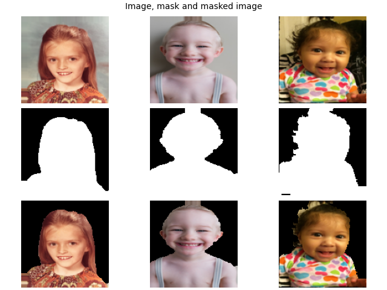
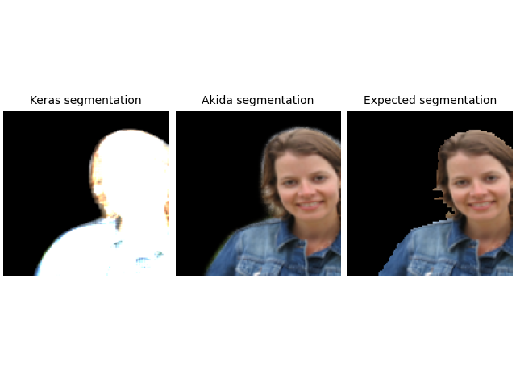

<!DOCTYPE html>
<html class="writer-html5" lang="en" data-content_root="../../">
<head>
  <meta charset="utf-8" /><meta name="viewport" content="width=device-width, initial-scale=1" />

  <meta name="viewport" content="width=device-width, initial-scale=1.0" />
  <title>Segmentation tutorial &mdash; Akida Examples  documentation</title>
      <link rel="stylesheet" type="text/css" href="../../_static/pygments.css?v=b86133f3" />
      <link rel="stylesheet" type="text/css" href="../../_static/css/theme.css?v=e59714d7" />
      <link rel="stylesheet" type="text/css" href="../../_static/sg_gallery.css?v=d2d258e8" />
      <link rel="stylesheet" type="text/css" href="../../_static/sg_gallery-binder.css?v=f4aeca0c" />
      <link rel="stylesheet" type="text/css" href="../../_static/sg_gallery-dataframe.css?v=2082cf3c" />
      <link rel="stylesheet" type="text/css" href="../../_static/sg_gallery-rendered-html.css?v=1277b6f3" />
      <link rel="stylesheet" type="text/css" href="../../_static/sphinx-design.min.css?v=95c83b7e" />
      <link rel="stylesheet" type="text/css" href="../../_static/custom.css?v=c4c4e161" />

  
    <link rel="shortcut icon" href="../../_static/favicon.ico"/>
      <script src="../../_static/jquery.js?v=5d32c60e"></script>
      <script src="../../_static/_sphinx_javascript_frameworks_compat.js?v=2cd50e6c"></script>
      <script src="../../_static/documentation_options.js?v=5929fcd5"></script>
      <script src="../../_static/doctools.js?v=9bcbadda"></script>
      <script src="../../_static/sphinx_highlight.js?v=dc90522c"></script>
      <script src="../../_static/design-tabs.js?v=f930bc37"></script>
      <script src="../../_static/leadlander_tag.js?v=d65c0df8"></script>
    <script src="../../_static/js/theme.js"></script>
    <link rel="index" title="Index" href="../../genindex.html" />
    <link rel="search" title="Search" href="../../search.html" />
    <link rel="next" title="PyTorch to Akida workflow" href="plot_7_global_pytorch_workflow.html" />
    <link rel="prev" title="YOLO/PASCAL-VOC detection tutorial" href="plot_5_voc_yolo_detection.html" /> 
</head>

<body class="wy-body-for-nav"> 
  <div class="wy-grid-for-nav">
    <nav data-toggle="wy-nav-shift" class="wy-nav-side">
      <div class="wy-side-scroll">
        <div class="wy-side-nav-search"  style="background: #000000" >

          
          
          <a href="../../index.html">
            
              
          </a>
<div role="search">
  <form id="rtd-search-form" class="wy-form" action="../../search.html" method="get">
    <input type="text" name="q" placeholder="Search docs" aria-label="Search docs" />
    <input type="hidden" name="check_keywords" value="yes" />
    <input type="hidden" name="area" value="default" />
  </form>
</div>
        </div><div class="wy-menu wy-menu-vertical" data-spy="affix" role="navigation" aria-label="Navigation menu">
              <ul class="current">
<li class="toctree-l1"><a class="reference internal" href="../../index.html">Overview</a></li>
<li class="toctree-l1"><a class="reference internal" href="../../installation.html">Installation</a><ul>
<li class="toctree-l2"><a class="reference internal" href="../../installation.html#supported-configurations">Supported configurations</a></li>
<li class="toctree-l2"><a class="reference internal" href="../../installation.html#quick-installation">Quick installation</a></li>
<li class="toctree-l2"><a class="reference internal" href="../../installation.html#running-examples">Running examples</a></li>
</ul>
</li>
<li class="toctree-l1"><a class="reference internal" href="../../user_guide/user_guide.html">User guide</a><ul>
<li class="toctree-l2"><a class="reference internal" href="../../user_guide/akida.html">Akida user guide</a><ul>
<li class="toctree-l3"><a class="reference internal" href="../../user_guide/akida.html#overview">Overview</a></li>
<li class="toctree-l3"><a class="reference internal" href="../../user_guide/akida.html#programming-interface">Programming interface</a><ul>
<li class="toctree-l4"><a class="reference internal" href="../../user_guide/akida.html#the-akida-model">The Akida Model</a></li>
<li class="toctree-l4"><a class="reference internal" href="../../user_guide/akida.html#akida-layers">Akida layers</a></li>
</ul>
</li>
<li class="toctree-l3"><a class="reference internal" href="../../user_guide/akida.html#model-hardware-mapping">Model Hardware Mapping</a><ul>
<li class="toctree-l4"><a class="reference internal" href="../../user_guide/akida.html#devices">Devices</a></li>
<li class="toctree-l4"><a class="reference internal" href="../../user_guide/akida.html#model-mapping">Model mapping</a></li>
<li class="toctree-l4"><a class="reference internal" href="../../user_guide/akida.html#advanced-mapping-details-and-hardware-devices-usage">Advanced Mapping Details and Hardware Devices Usage</a></li>
<li class="toctree-l4"><a class="reference internal" href="../../user_guide/akida.html#performance-measurement">Performance measurement</a></li>
<li class="toctree-l4"><a class="reference internal" href="../../user_guide/akida.html#command-line-interface-for-model-evaluation">Command-line interface for model evaluation</a></li>
</ul>
</li>
<li class="toctree-l3"><a class="reference internal" href="../../user_guide/akida.html#using-akida-edge-learning">Using Akida Edge learning</a><ul>
<li class="toctree-l4"><a class="reference internal" href="../../user_guide/akida.html#learning-constraints">Learning constraints</a></li>
<li class="toctree-l4"><a class="reference internal" href="../../user_guide/akida.html#compiling-a-layer">Compiling a layer</a></li>
</ul>
</li>
</ul>
</li>
<li class="toctree-l2"><a class="reference internal" href="../../user_guide/quantizeml.html">QuantizeML toolkit</a><ul>
<li class="toctree-l3"><a class="reference internal" href="../../user_guide/quantizeml.html#overview">Overview</a></li>
<li class="toctree-l3"><a class="reference internal" href="../../user_guide/quantizeml.html#the-fixedpoint-representation">The FixedPoint representation</a></li>
<li class="toctree-l3"><a class="reference internal" href="../../user_guide/quantizeml.html#quantization-flow">Quantization flow</a><ul>
<li class="toctree-l4"><a class="reference internal" href="../../user_guide/quantizeml.html#compatibility-constraints">Compatibility constraints</a></li>
<li class="toctree-l4"><a class="reference internal" href="../../user_guide/quantizeml.html#model-loading">Model loading</a></li>
</ul>
</li>
<li class="toctree-l3"><a class="reference internal" href="../../user_guide/quantizeml.html#command-line-interface">Command line interface</a><ul>
<li class="toctree-l4"><a class="reference internal" href="../../user_guide/quantizeml.html#quantize-cli">quantize CLI</a></li>
<li class="toctree-l4"><a class="reference internal" href="../../user_guide/quantizeml.html#config-cli">config CLI</a></li>
<li class="toctree-l4"><a class="reference internal" href="../../user_guide/quantizeml.html#check-cli">check CLI</a></li>
<li class="toctree-l4"><a class="reference internal" href="../../user_guide/quantizeml.html#insert-rescaling-cli">insert_rescaling CLI</a></li>
</ul>
</li>
<li class="toctree-l3"><a class="reference internal" href="../../user_guide/quantizeml.html#supported-layer-types">Supported layer types</a><ul>
<li class="toctree-l4"><a class="reference internal" href="../../user_guide/quantizeml.html#tf-keras-support">TF-Keras support</a></li>
<li class="toctree-l4"><a class="reference internal" href="../../user_guide/quantizeml.html#onnx-support">ONNX support</a></li>
</ul>
</li>
<li class="toctree-l3"><a class="reference internal" href="../../user_guide/quantizeml.html#analysis-module">Analysis module</a><ul>
<li class="toctree-l4"><a class="reference internal" href="../../user_guide/quantizeml.html#kernel-distribution">Kernel distribution</a></li>
<li class="toctree-l4"><a class="reference internal" href="../../user_guide/quantizeml.html#quantization-error">Quantization error</a></li>
<li class="toctree-l4"><a class="reference internal" href="../../user_guide/quantizeml.html#metrics">Metrics</a></li>
<li class="toctree-l4"><a class="reference internal" href="../../user_guide/quantizeml.html#command-line">Command line</a></li>
</ul>
</li>
</ul>
</li>
<li class="toctree-l2"><a class="reference internal" href="../../user_guide/cnn2snn.html">CNN2SNN toolkit</a><ul>
<li class="toctree-l3"><a class="reference internal" href="../../user_guide/cnn2snn.html#overview">Overview</a></li>
<li class="toctree-l3"><a class="reference internal" href="../../user_guide/cnn2snn.html#conversion-flow">Conversion flow</a><ul>
<li class="toctree-l4"><a class="reference internal" href="../../user_guide/cnn2snn.html#conversion-compatibility">Conversion compatibility</a></li>
<li class="toctree-l4"><a class="reference internal" href="../../user_guide/cnn2snn.html#command-line-interface">Command-line interface</a></li>
</ul>
</li>
<li class="toctree-l3"><a class="reference internal" href="../../user_guide/cnn2snn.html#handling-akida-1-0-and-akida-2-0-specificities">Handling Akida 1.0 and Akida 2.0 specificities</a></li>
</ul>
</li>
<li class="toctree-l2"><a class="reference internal" href="../../user_guide/akida_models.html">Akida models zoo</a><ul>
<li class="toctree-l3"><a class="reference internal" href="../../user_guide/akida_models.html#overview">Overview</a></li>
<li class="toctree-l3"><a class="reference internal" href="../../user_guide/akida_models.html#command-line-interface-for-model-creation">Command-line interface for model creation</a></li>
<li class="toctree-l3"><a class="reference internal" href="../../user_guide/akida_models.html#command-line-interface-for-model-training">Command-line interface for model training</a><ul>
<li class="toctree-l4"><a class="reference internal" href="../../user_guide/akida_models.html#kws-training">KWS training</a></li>
<li class="toctree-l4"><a class="reference internal" href="../../user_guide/akida_models.html#akidanet-training">AkidaNet training</a></li>
</ul>
</li>
<li class="toctree-l3"><a class="reference internal" href="../../user_guide/akida_models.html#command-line-interface-for-model-evaluation">Command-line interface for model evaluation</a></li>
<li class="toctree-l3"><a class="reference internal" href="../../user_guide/akida_models.html#command-line-interface-to-display-summary">Command-line interface to display summary</a></li>
<li class="toctree-l3"><a class="reference internal" href="../../user_guide/akida_models.html#command-line-interface-to-display-sparsity">Command-line interface to display sparsity</a></li>
<li class="toctree-l3"><a class="reference internal" href="../../user_guide/akida_models.html#id1">Layer Blocks</a></li>
<li class="toctree-l3"><a class="reference internal" href="../../user_guide/akida_models.html#handling-akida-1-0-and-akida-2-0-specificities">Handling Akida 1.0 and Akida 2.0 specificities</a></li>
</ul>
</li>
<li class="toctree-l2"><a class="reference internal" href="../../user_guide/engine.html">Akida Engine</a><ul>
<li class="toctree-l3"><a class="reference internal" href="../../user_guide/engine.html#overview">Overview</a></li>
<li class="toctree-l3"><a class="reference internal" href="../../user_guide/engine.html#engine-directory-structure">Engine directory structure</a></li>
<li class="toctree-l3"><a class="reference internal" href="../../user_guide/engine.html#engine-api-overview">Engine API overview</a><ul>
<li class="toctree-l4"><a class="reference internal" href="../../user_guide/engine.html#hardwaredriver">HardwareDriver</a></li>
<li class="toctree-l4"><a class="reference internal" href="../../user_guide/engine.html#hardwaredevice">HardwareDevice</a></li>
<li class="toctree-l4"><a class="reference internal" href="../../user_guide/engine.html#dense">Dense</a></li>
<li class="toctree-l4"><a class="reference internal" href="../../user_guide/engine.html#shape">Shape</a></li>
<li class="toctree-l4"><a class="reference internal" href="../../user_guide/engine.html#hwversion">HwVersion</a></li>
<li class="toctree-l4"><a class="reference internal" href="../../user_guide/engine.html#sparse-and-input-conversion-functions">Sparse and Input conversion functions</a></li>
<li class="toctree-l4"><a class="reference internal" href="../../user_guide/engine.html#other-headers-in-the-api">Other headers in the API</a></li>
</ul>
</li>
</ul>
</li>
<li class="toctree-l2"><a class="reference internal" href="../../user_guide/user_guide.html#akida-hw-capabilities">Akida HW capabilities</a><ul>
<li class="toctree-l3"><a class="reference internal" href="../../user_guide/hardware/1.0.html">Akida 1.0 capabilities</a></li>
<li class="toctree-l3"><a class="reference internal" href="../../user_guide/hardware/2.0.html">Akida 2.0 capabilities</a></li>
</ul>
</li>
</ul>
</li>
<li class="toctree-l1"><a class="reference internal" href="../../api_reference/api_reference.html">API reference</a><ul>
<li class="toctree-l2"><a class="reference internal" href="../../api_reference/akida_apis.html">Akida runtime</a><ul>
<li class="toctree-l3"><a class="reference internal" href="../../api_reference/akida_apis.html#akida.__version__"><code class="docutils literal notranslate"><span class="pre">__version__</span></code></a></li>
<li class="toctree-l3"><a class="reference internal" href="../../api_reference/akida_apis.html#model">Model</a><ul>
<li class="toctree-l4"><a class="reference internal" href="../../api_reference/akida_apis.html#akida.Model"><code class="docutils literal notranslate"><span class="pre">Model</span></code></a></li>
</ul>
</li>
<li class="toctree-l3"><a class="reference internal" href="../../api_reference/akida_apis.html#akida-layers">Akida layers</a><ul>
<li class="toctree-l4"><a class="reference internal" href="../../api_reference/akida_apis.html#layer-api">Layer API</a></li>
<li class="toctree-l4"><a class="reference internal" href="../../api_reference/akida_apis.html#common-layer">Common layer</a></li>
<li class="toctree-l4"><a class="reference internal" href="../../api_reference/akida_apis.html#akida-v1-layers">Akida V1 layers</a></li>
<li class="toctree-l4"><a class="reference internal" href="../../api_reference/akida_apis.html#akida-v2-layers">Akida V2 layers</a></li>
</ul>
</li>
<li class="toctree-l3"><a class="reference internal" href="../../api_reference/akida_apis.html#layer-parameters">Layer parameters</a><ul>
<li class="toctree-l4"><a class="reference internal" href="../../api_reference/akida_apis.html#layertype">LayerType</a></li>
<li class="toctree-l4"><a class="reference internal" href="../../api_reference/akida_apis.html#activationtype">ActivationType</a></li>
<li class="toctree-l4"><a class="reference internal" href="../../api_reference/akida_apis.html#padding">Padding</a></li>
<li class="toctree-l4"><a class="reference internal" href="../../api_reference/akida_apis.html#pooltype">PoolType</a></li>
</ul>
</li>
<li class="toctree-l3"><a class="reference internal" href="../../api_reference/akida_apis.html#optimizers">Optimizers</a><ul>
<li class="toctree-l4"><a class="reference internal" href="../../api_reference/akida_apis.html#akida.core.Optimizer"><code class="docutils literal notranslate"><span class="pre">Optimizer</span></code></a></li>
<li class="toctree-l4"><a class="reference internal" href="../../api_reference/akida_apis.html#akida.AkidaUnsupervised"><code class="docutils literal notranslate"><span class="pre">AkidaUnsupervised</span></code></a></li>
</ul>
</li>
<li class="toctree-l3"><a class="reference internal" href="../../api_reference/akida_apis.html#sequence">Sequence</a><ul>
<li class="toctree-l4"><a class="reference internal" href="../../api_reference/akida_apis.html#id1">Sequence</a></li>
<li class="toctree-l4"><a class="reference internal" href="../../api_reference/akida_apis.html#backendtype">BackendType</a></li>
<li class="toctree-l4"><a class="reference internal" href="../../api_reference/akida_apis.html#pass">Pass</a></li>
</ul>
</li>
<li class="toctree-l3"><a class="reference internal" href="../../api_reference/akida_apis.html#device">Device</a><ul>
<li class="toctree-l4"><a class="reference internal" href="../../api_reference/akida_apis.html#id2">Device</a></li>
<li class="toctree-l4"><a class="reference internal" href="../../api_reference/akida_apis.html#hwversion">HwVersion</a></li>
</ul>
</li>
<li class="toctree-l3"><a class="reference internal" href="../../api_reference/akida_apis.html#hwdevice">HwDevice</a><ul>
<li class="toctree-l4"><a class="reference internal" href="../../api_reference/akida_apis.html#id3">HwDevice</a></li>
<li class="toctree-l4"><a class="reference internal" href="../../api_reference/akida_apis.html#socdriver">SocDriver</a></li>
<li class="toctree-l4"><a class="reference internal" href="../../api_reference/akida_apis.html#clockmode">ClockMode</a></li>
</ul>
</li>
<li class="toctree-l3"><a class="reference internal" href="../../api_reference/akida_apis.html#powermeter">PowerMeter</a><ul>
<li class="toctree-l4"><a class="reference internal" href="../../api_reference/akida_apis.html#akida.PowerMeter"><code class="docutils literal notranslate"><span class="pre">PowerMeter</span></code></a></li>
<li class="toctree-l4"><a class="reference internal" href="../../api_reference/akida_apis.html#akida.PowerEvent"><code class="docutils literal notranslate"><span class="pre">PowerEvent</span></code></a></li>
</ul>
</li>
<li class="toctree-l3"><a class="reference internal" href="../../api_reference/akida_apis.html#np">NP</a><ul>
<li class="toctree-l4"><a class="reference internal" href="../../api_reference/akida_apis.html#akida.NP.Mesh"><code class="docutils literal notranslate"><span class="pre">Mesh</span></code></a></li>
<li class="toctree-l4"><a class="reference internal" href="../../api_reference/akida_apis.html#akida.NP.Info"><code class="docutils literal notranslate"><span class="pre">Info</span></code></a></li>
<li class="toctree-l4"><a class="reference internal" href="../../api_reference/akida_apis.html#akida.NP.Ident"><code class="docutils literal notranslate"><span class="pre">Ident</span></code></a></li>
<li class="toctree-l4"><a class="reference internal" href="../../api_reference/akida_apis.html#akida.NP.NpSpace"><code class="docutils literal notranslate"><span class="pre">NpSpace</span></code></a></li>
<li class="toctree-l4"><a class="reference internal" href="../../api_reference/akida_apis.html#akida.NP.Type"><code class="docutils literal notranslate"><span class="pre">Type</span></code></a></li>
<li class="toctree-l4"><a class="reference internal" href="../../api_reference/akida_apis.html#akida.NP.MemoryInfo"><code class="docutils literal notranslate"><span class="pre">MemoryInfo</span></code></a></li>
<li class="toctree-l4"><a class="reference internal" href="../../api_reference/akida_apis.html#akida.NP.Component"><code class="docutils literal notranslate"><span class="pre">Component</span></code></a></li>
<li class="toctree-l4"><a class="reference internal" href="../../api_reference/akida_apis.html#akida.NP.SramSize"><code class="docutils literal notranslate"><span class="pre">SramSize</span></code></a></li>
</ul>
</li>
<li class="toctree-l3"><a class="reference internal" href="../../api_reference/akida_apis.html#mapping">Mapping</a><ul>
<li class="toctree-l4"><a class="reference internal" href="../../api_reference/akida_apis.html#akida.MapMode"><code class="docutils literal notranslate"><span class="pre">MapMode</span></code></a></li>
<li class="toctree-l4"><a class="reference internal" href="../../api_reference/akida_apis.html#akida.MapConstraints"><code class="docutils literal notranslate"><span class="pre">MapConstraints</span></code></a></li>
</ul>
</li>
</ul>
</li>
<li class="toctree-l2"><a class="reference internal" href="../../api_reference/cnn2snn_apis.html">CNN2SNN</a><ul>
<li class="toctree-l3"><a class="reference internal" href="../../api_reference/cnn2snn_apis.html#akida-version">Akida version</a><ul>
<li class="toctree-l4"><a class="reference internal" href="../../api_reference/cnn2snn_apis.html#cnn2snn.AkidaVersion"><code class="docutils literal notranslate"><span class="pre">AkidaVersion</span></code></a></li>
<li class="toctree-l4"><a class="reference internal" href="../../api_reference/cnn2snn_apis.html#cnn2snn.get_akida_version"><code class="docutils literal notranslate"><span class="pre">get_akida_version()</span></code></a></li>
<li class="toctree-l4"><a class="reference internal" href="../../api_reference/cnn2snn_apis.html#cnn2snn.set_akida_version"><code class="docutils literal notranslate"><span class="pre">set_akida_version()</span></code></a></li>
</ul>
</li>
<li class="toctree-l3"><a class="reference internal" href="../../api_reference/cnn2snn_apis.html#conversion">Conversion</a><ul>
<li class="toctree-l4"><a class="reference internal" href="../../api_reference/cnn2snn_apis.html#cnn2snn.convert"><code class="docutils literal notranslate"><span class="pre">convert()</span></code></a></li>
<li class="toctree-l4"><a class="reference internal" href="../../api_reference/cnn2snn_apis.html#cnn2snn.check_model_compatibility"><code class="docutils literal notranslate"><span class="pre">check_model_compatibility()</span></code></a></li>
</ul>
</li>
</ul>
</li>
<li class="toctree-l2"><a class="reference internal" href="../../api_reference/quantizeml_apis.html">QuantizeML</a><ul>
<li class="toctree-l3"><a class="reference internal" href="../../api_reference/quantizeml_apis.html#layers">Layers</a><ul>
<li class="toctree-l4"><a class="reference internal" href="../../api_reference/quantizeml_apis.html#reshaping">Reshaping</a></li>
<li class="toctree-l4"><a class="reference internal" href="../../api_reference/quantizeml_apis.html#activations">Activations</a></li>
<li class="toctree-l4"><a class="reference internal" href="../../api_reference/quantizeml_apis.html#convolution">Convolution</a></li>
<li class="toctree-l4"><a class="reference internal" href="../../api_reference/quantizeml_apis.html#depthwise-convolution">Depthwise convolution</a></li>
<li class="toctree-l4"><a class="reference internal" href="../../api_reference/quantizeml_apis.html#separable-convolution">Separable convolution</a></li>
<li class="toctree-l4"><a class="reference internal" href="../../api_reference/quantizeml_apis.html#temporal-convolution">Temporal convolution</a></li>
<li class="toctree-l4"><a class="reference internal" href="../../api_reference/quantizeml_apis.html#dense">Dense</a></li>
<li class="toctree-l4"><a class="reference internal" href="../../api_reference/quantizeml_apis.html#skip-connection">Skip connection</a></li>
<li class="toctree-l4"><a class="reference internal" href="../../api_reference/quantizeml_apis.html#pooling">Pooling</a></li>
<li class="toctree-l4"><a class="reference internal" href="../../api_reference/quantizeml_apis.html#rescaling">Rescaling</a></li>
<li class="toctree-l4"><a class="reference internal" href="../../api_reference/quantizeml_apis.html#dropout">Dropout</a></li>
<li class="toctree-l4"><a class="reference internal" href="../../api_reference/quantizeml_apis.html#quantizer-dequantizer">Quantizer/Dequantizer</a></li>
<li class="toctree-l4"><a class="reference internal" href="../../api_reference/quantizeml_apis.html#calibration">Calibration</a></li>
<li class="toctree-l4"><a class="reference internal" href="../../api_reference/quantizeml_apis.html#recording">Recording</a></li>
</ul>
</li>
<li class="toctree-l3"><a class="reference internal" href="../../api_reference/quantizeml_apis.html#models">Models</a><ul>
<li class="toctree-l4"><a class="reference internal" href="../../api_reference/quantizeml_apis.html#quantization">Quantization</a></li>
<li class="toctree-l4"><a class="reference internal" href="../../api_reference/quantizeml_apis.html#quantization-parameters">Quantization parameters</a></li>
<li class="toctree-l4"><a class="reference internal" href="../../api_reference/quantizeml_apis.html#id1">Calibration</a></li>
<li class="toctree-l4"><a class="reference internal" href="../../api_reference/quantizeml_apis.html#utils">Utils</a></li>
<li class="toctree-l4"><a class="reference internal" href="../../api_reference/quantizeml_apis.html#reset-buffers">Reset buffers</a></li>
</ul>
</li>
<li class="toctree-l3"><a class="reference internal" href="../../api_reference/quantizeml_apis.html#tensors">Tensors</a><ul>
<li class="toctree-l4"><a class="reference internal" href="../../api_reference/quantizeml_apis.html#qtensor">QTensor</a></li>
<li class="toctree-l4"><a class="reference internal" href="../../api_reference/quantizeml_apis.html#fixedpoint">FixedPoint</a></li>
<li class="toctree-l4"><a class="reference internal" href="../../api_reference/quantizeml_apis.html#qfloat">QFloat</a></li>
</ul>
</li>
<li class="toctree-l3"><a class="reference internal" href="../../api_reference/quantizeml_apis.html#onnx-support">ONNX support</a><ul>
<li class="toctree-l4"><a class="reference internal" href="../../api_reference/quantizeml_apis.html#id2">Layers</a></li>
</ul>
</li>
<li class="toctree-l3"><a class="reference internal" href="../../api_reference/quantizeml_apis.html#model-i-o">Model I/O</a><ul>
<li class="toctree-l4"><a class="reference internal" href="../../api_reference/quantizeml_apis.html#quantizeml.load_model"><code class="docutils literal notranslate"><span class="pre">load_model()</span></code></a></li>
<li class="toctree-l4"><a class="reference internal" href="../../api_reference/quantizeml_apis.html#quantizeml.save_model"><code class="docutils literal notranslate"><span class="pre">save_model()</span></code></a></li>
</ul>
</li>
<li class="toctree-l3"><a class="reference internal" href="../../api_reference/quantizeml_apis.html#analysis">Analysis</a><ul>
<li class="toctree-l4"><a class="reference internal" href="../../api_reference/quantizeml_apis.html#kernel-distribution">Kernel distribution</a></li>
<li class="toctree-l4"><a class="reference internal" href="../../api_reference/quantizeml_apis.html#quantization-error">Quantization error</a></li>
<li class="toctree-l4"><a class="reference internal" href="../../api_reference/quantizeml_apis.html#metrics">Metrics</a></li>
</ul>
</li>
</ul>
</li>
<li class="toctree-l2"><a class="reference internal" href="../../api_reference/akida_models_apis.html">Akida models</a><ul>
<li class="toctree-l3"><a class="reference internal" href="../../api_reference/akida_models_apis.html#layer-blocks">Layer blocks</a><ul>
<li class="toctree-l4"><a class="reference internal" href="../../api_reference/akida_models_apis.html#cnn-blocks">CNN blocks</a></li>
<li class="toctree-l4"><a class="reference internal" href="../../api_reference/akida_models_apis.html#transposed-blocks">Transposed blocks</a></li>
<li class="toctree-l4"><a class="reference internal" href="../../api_reference/akida_models_apis.html#detection-block">Detection block</a></li>
<li class="toctree-l4"><a class="reference internal" href="../../api_reference/akida_models_apis.html#spatiotemporal-blocks">Spatiotemporal blocks</a></li>
</ul>
</li>
<li class="toctree-l3"><a class="reference internal" href="../../api_reference/akida_models_apis.html#helpers">Helpers</a><ul>
<li class="toctree-l4"><a class="reference internal" href="../../api_reference/akida_models_apis.html#gamma-constraint">Gamma constraint</a></li>
<li class="toctree-l4"><a class="reference internal" href="../../api_reference/akida_models_apis.html#unfusing-separableconvolutional">Unfusing SeparableConvolutional</a></li>
<li class="toctree-l4"><a class="reference internal" href="../../api_reference/akida_models_apis.html#extract-samples">Extract samples</a></li>
</ul>
</li>
<li class="toctree-l3"><a class="reference internal" href="../../api_reference/akida_models_apis.html#knowledge-distillation">Knowledge distillation</a><ul>
<li class="toctree-l4"><a class="reference internal" href="../../api_reference/akida_models_apis.html#akida_models.distiller.Distiller"><code class="docutils literal notranslate"><span class="pre">Distiller</span></code></a></li>
</ul>
</li>
<li class="toctree-l3"><a class="reference internal" href="../../api_reference/akida_models_apis.html#sparsity">Sparsity</a><ul>
<li class="toctree-l4"><a class="reference internal" href="../../api_reference/akida_models_apis.html#akida_models.sparsity.compute_sparsity"><code class="docutils literal notranslate"><span class="pre">compute_sparsity()</span></code></a></li>
</ul>
</li>
<li class="toctree-l3"><a class="reference internal" href="../../api_reference/akida_models_apis.html#model-i-o">Model I/O</a><ul>
<li class="toctree-l4"><a class="reference internal" href="../../api_reference/akida_models_apis.html#akida_models.model_io.load_model"><code class="docutils literal notranslate"><span class="pre">load_model()</span></code></a></li>
<li class="toctree-l4"><a class="reference internal" href="../../api_reference/akida_models_apis.html#akida_models.model_io.load_weights"><code class="docutils literal notranslate"><span class="pre">load_weights()</span></code></a></li>
<li class="toctree-l4"><a class="reference internal" href="../../api_reference/akida_models_apis.html#akida_models.model_io.save_weights"><code class="docutils literal notranslate"><span class="pre">save_weights()</span></code></a></li>
<li class="toctree-l4"><a class="reference internal" href="../../api_reference/akida_models_apis.html#akida_models.model_io.get_model_path"><code class="docutils literal notranslate"><span class="pre">get_model_path()</span></code></a></li>
</ul>
</li>
<li class="toctree-l3"><a class="reference internal" href="../../api_reference/akida_models_apis.html#utils">Utils</a><ul>
<li class="toctree-l4"><a class="reference internal" href="../../api_reference/akida_models_apis.html#akida_models.utils.fetch_file"><code class="docutils literal notranslate"><span class="pre">fetch_file()</span></code></a></li>
<li class="toctree-l4"><a class="reference internal" href="../../api_reference/akida_models_apis.html#akida_models.utils.get_tensorboard_callback"><code class="docutils literal notranslate"><span class="pre">get_tensorboard_callback()</span></code></a></li>
<li class="toctree-l4"><a class="reference internal" href="../../api_reference/akida_models_apis.html#akida_models.utils.get_params_by_version"><code class="docutils literal notranslate"><span class="pre">get_params_by_version()</span></code></a></li>
</ul>
</li>
<li class="toctree-l3"><a class="reference internal" href="../../api_reference/akida_models_apis.html#model-zoo">Model zoo</a><ul>
<li class="toctree-l4"><a class="reference internal" href="../../api_reference/akida_models_apis.html#akidanet">AkidaNet</a></li>
<li class="toctree-l4"><a class="reference internal" href="../../api_reference/akida_models_apis.html#mobilenet">MobileNet</a></li>
<li class="toctree-l4"><a class="reference internal" href="../../api_reference/akida_models_apis.html#ds-cnn">DS-CNN</a></li>
<li class="toctree-l4"><a class="reference internal" href="../../api_reference/akida_models_apis.html#vgg">VGG</a></li>
<li class="toctree-l4"><a class="reference internal" href="../../api_reference/akida_models_apis.html#yolo">YOLO</a></li>
<li class="toctree-l4"><a class="reference internal" href="../../api_reference/akida_models_apis.html#pointnet">PointNet++</a></li>
<li class="toctree-l4"><a class="reference internal" href="../../api_reference/akida_models_apis.html#gxnor">GXNOR</a></li>
<li class="toctree-l4"><a class="reference internal" href="../../api_reference/akida_models_apis.html#centernet">CenterNet</a></li>
<li class="toctree-l4"><a class="reference internal" href="../../api_reference/akida_models_apis.html#akidaunet">AkidaUNet</a></li>
<li class="toctree-l4"><a class="reference internal" href="../../api_reference/akida_models_apis.html#spatiotemporal-tenns">Spatiotemporal TENNs</a></li>
</ul>
</li>
</ul>
</li>
<li class="toctree-l2"><a class="reference internal" href="../../api_reference/tenns_modules_apis.html">TENNs modules</a><ul>
<li class="toctree-l3"><a class="reference internal" href="../../api_reference/tenns_modules_apis.html#spatiotemporal-blocks">Spatiotemporal blocks</a><ul>
<li class="toctree-l4"><a class="reference internal" href="../../api_reference/tenns_modules_apis.html#tenns_modules.SpatialBlock"><code class="docutils literal notranslate"><span class="pre">SpatialBlock</span></code></a></li>
<li class="toctree-l4"><a class="reference internal" href="../../api_reference/tenns_modules_apis.html#tenns_modules.TemporalBlock"><code class="docutils literal notranslate"><span class="pre">TemporalBlock</span></code></a></li>
<li class="toctree-l4"><a class="reference internal" href="../../api_reference/tenns_modules_apis.html#tenns_modules.SpatioTemporalBlock"><code class="docutils literal notranslate"><span class="pre">SpatioTemporalBlock</span></code></a></li>
</ul>
</li>
<li class="toctree-l3"><a class="reference internal" href="../../api_reference/tenns_modules_apis.html#export">Export</a><ul>
<li class="toctree-l4"><a class="reference internal" href="../../api_reference/tenns_modules_apis.html#tenns_modules.export_to_onnx"><code class="docutils literal notranslate"><span class="pre">export_to_onnx()</span></code></a></li>
</ul>
</li>
</ul>
</li>
</ul>
</li>
<li class="toctree-l1 current"><a class="reference internal" href="../index.html">Examples</a><ul class="current">
<li class="toctree-l2 current"><a class="reference internal" href="../index.html#general-examples">General examples</a><ul class="current">
<li class="toctree-l3"><a class="reference internal" href="plot_0_global_workflow.html">Global Akida workflow</a><ul>
<li class="toctree-l4"><a class="reference internal" href="plot_0_global_workflow.html#create-and-train">1. Create and train</a></li>
<li class="toctree-l4"><a class="reference internal" href="plot_0_global_workflow.html#quantize">2. Quantize</a></li>
<li class="toctree-l4"><a class="reference internal" href="plot_0_global_workflow.html#convert">3. Convert</a></li>
</ul>
</li>
<li class="toctree-l3"><a class="reference internal" href="plot_1_akidanet_imagenet.html">AkidaNet/ImageNet inference</a><ul>
<li class="toctree-l4"><a class="reference internal" href="plot_1_akidanet_imagenet.html#dataset-preparation">1. Dataset preparation</a></li>
<li class="toctree-l4"><a class="reference internal" href="plot_1_akidanet_imagenet.html#pretrained-quantized-model">2. Pretrained quantized model</a></li>
<li class="toctree-l4"><a class="reference internal" href="plot_1_akidanet_imagenet.html#conversion-to-akida">3. Conversion to Akida</a></li>
<li class="toctree-l4"><a class="reference internal" href="plot_1_akidanet_imagenet.html#hardware-mapping-and-performance">4. Hardware mapping and performance</a></li>
</ul>
</li>
<li class="toctree-l3"><a class="reference internal" href="plot_2_ds_cnn_kws.html">DS-CNN/KWS inference</a><ul>
<li class="toctree-l4"><a class="reference internal" href="plot_2_ds_cnn_kws.html#load-the-preprocessed-dataset">1. Load the preprocessed dataset</a></li>
<li class="toctree-l4"><a class="reference internal" href="plot_2_ds_cnn_kws.html#load-a-pre-trained-native-tf-keras-model">2. Load a pre-trained native TF-Keras model</a></li>
<li class="toctree-l4"><a class="reference internal" href="plot_2_ds_cnn_kws.html#load-a-pre-trained-quantized-tf-keras-model">3. Load a pre-trained quantized TF-Keras model</a></li>
<li class="toctree-l4"><a class="reference internal" href="plot_2_ds_cnn_kws.html#conversion-to-akida">4. Conversion to Akida</a></li>
<li class="toctree-l4"><a class="reference internal" href="plot_2_ds_cnn_kws.html#confusion-matrix">5. Confusion matrix</a></li>
</ul>
</li>
<li class="toctree-l3"><a class="reference internal" href="plot_3_regression.html">Age estimation (regression) example</a><ul>
<li class="toctree-l4"><a class="reference internal" href="plot_3_regression.html#load-the-utkface-dataset">1. Load the UTKFace Dataset</a></li>
<li class="toctree-l4"><a class="reference internal" href="plot_3_regression.html#load-a-pre-trained-native-tf-keras-model">2. Load a pre-trained native TF-Keras model</a></li>
<li class="toctree-l4"><a class="reference internal" href="plot_3_regression.html#load-a-pre-trained-quantized-tf-keras-model">3. Load a pre-trained quantized TF-Keras model</a></li>
<li class="toctree-l4"><a class="reference internal" href="plot_3_regression.html#conversion-to-akida">4. Conversion to Akida</a></li>
<li class="toctree-l4"><a class="reference internal" href="plot_3_regression.html#estimate-age-on-a-single-image">5. Estimate age on a single image</a></li>
</ul>
</li>
<li class="toctree-l3"><a class="reference internal" href="plot_4_transfer_learning.html">Transfer learning with AkidaNet for PlantVillage</a><ul>
<li class="toctree-l4"><a class="reference internal" href="plot_4_transfer_learning.html#transfer-learning-process">Transfer learning process</a></li>
<li class="toctree-l4"><a class="reference internal" href="plot_4_transfer_learning.html#dataset-preparation">1. Dataset preparation</a></li>
<li class="toctree-l4"><a class="reference internal" href="plot_4_transfer_learning.html#get-a-trained-akidanet-base-model">2. Get a trained AkidaNet base model</a></li>
<li class="toctree-l4"><a class="reference internal" href="plot_4_transfer_learning.html#add-a-classification-head-to-the-model">3. Add a classification head to the model</a></li>
<li class="toctree-l4"><a class="reference internal" href="plot_4_transfer_learning.html#train-for-a-few-epochs">4. Train for a few epochs</a></li>
<li class="toctree-l4"><a class="reference internal" href="plot_4_transfer_learning.html#quantize-the-model">5. Quantize the model</a></li>
<li class="toctree-l4"><a class="reference internal" href="plot_4_transfer_learning.html#compute-accuracy">6. Compute accuracy</a></li>
</ul>
</li>
<li class="toctree-l3"><a class="reference internal" href="plot_5_voc_yolo_detection.html">YOLO/PASCAL-VOC detection tutorial</a><ul>
<li class="toctree-l4"><a class="reference internal" href="plot_5_voc_yolo_detection.html#introduction">1. Introduction</a></li>
<li class="toctree-l4"><a class="reference internal" href="plot_5_voc_yolo_detection.html#preprocessing-tools">2. Preprocessing tools</a></li>
<li class="toctree-l4"><a class="reference internal" href="plot_5_voc_yolo_detection.html#model-architecture">3. Model architecture</a></li>
<li class="toctree-l4"><a class="reference internal" href="plot_5_voc_yolo_detection.html#training">4. Training</a></li>
<li class="toctree-l4"><a class="reference internal" href="plot_5_voc_yolo_detection.html#performance">5. Performance</a></li>
<li class="toctree-l4"><a class="reference internal" href="plot_5_voc_yolo_detection.html#conversion-to-akida">6. Conversion to Akida</a></li>
</ul>
</li>
<li class="toctree-l3 current"><a class="current reference internal" href="#">Segmentation tutorial</a><ul>
<li class="toctree-l4"><a class="reference internal" href="#load-the-dataset">1. Load the dataset</a></li>
<li class="toctree-l4"><a class="reference internal" href="#load-a-pre-trained-native-tf-keras-model">2. Load a pre-trained native TF-Keras model</a></li>
<li class="toctree-l4"><a class="reference internal" href="#load-a-pre-trained-quantized-keras-model">3. Load a pre-trained quantized Keras model</a></li>
<li class="toctree-l4"><a class="reference internal" href="#conversion-to-akida">4. Conversion to Akida</a></li>
<li class="toctree-l4"><a class="reference internal" href="#segment-a-single-image">5. Segment a single image</a></li>
</ul>
</li>
<li class="toctree-l3"><a class="reference internal" href="plot_7_global_pytorch_workflow.html">PyTorch to Akida workflow</a><ul>
<li class="toctree-l4"><a class="reference internal" href="plot_7_global_pytorch_workflow.html#create-and-train">1. Create and train</a></li>
<li class="toctree-l4"><a class="reference internal" href="plot_7_global_pytorch_workflow.html#export">2. Export</a></li>
<li class="toctree-l4"><a class="reference internal" href="plot_7_global_pytorch_workflow.html#quantize">3. Quantize</a></li>
<li class="toctree-l4"><a class="reference internal" href="plot_7_global_pytorch_workflow.html#convert">4. Convert</a></li>
</ul>
</li>
</ul>
</li>
<li class="toctree-l2"><a class="reference internal" href="../index.html#quantization">Quantization</a><ul>
<li class="toctree-l3"><a class="reference internal" href="../quantization/plot_0_advanced_quantizeml.html">Advanced QuantizeML tutorial</a><ul>
<li class="toctree-l4"><a class="reference internal" href="../quantization/plot_0_advanced_quantizeml.html#defining-a-quantization-scheme">1. Defining a quantization scheme</a></li>
<li class="toctree-l4"><a class="reference internal" href="../quantization/plot_0_advanced_quantizeml.html#calibration">2. Calibration</a></li>
<li class="toctree-l4"><a class="reference internal" href="../quantization/plot_0_advanced_quantizeml.html#handling-input-types">3. Handling input types</a></li>
</ul>
</li>
<li class="toctree-l3"><a class="reference internal" href="../quantization/plot_1_upgrading_to_2.0.html">Upgrading to Akida 2.0</a><ul>
<li class="toctree-l4"><a class="reference internal" href="../quantization/plot_1_upgrading_to_2.0.html#workflow-differences">1. Workflow differences</a></li>
<li class="toctree-l4"><a class="reference internal" href="../quantization/plot_1_upgrading_to_2.0.html#models-architecture-differences">2. Models architecture differences</a></li>
<li class="toctree-l4"><a class="reference internal" href="../quantization/plot_1_upgrading_to_2.0.html#using-akidaversion">3. Using <code class="docutils literal notranslate"><span class="pre">AkidaVersion</span></code></a></li>
</ul>
</li>
<li class="toctree-l3"><a class="reference internal" href="../quantization/plot_2_off_the_shelf_quantization.html">Off-the-shelf models quantization</a><ul>
<li class="toctree-l4"><a class="reference internal" href="../quantization/plot_2_off_the_shelf_quantization.html#workflow-overview">1. Workflow overview</a></li>
<li class="toctree-l4"><a class="reference internal" href="../quantization/plot_2_off_the_shelf_quantization.html#data-preparation">2. Data preparation</a></li>
<li class="toctree-l4"><a class="reference internal" href="../quantization/plot_2_off_the_shelf_quantization.html#download-and-export">3. Download and export</a></li>
<li class="toctree-l4"><a class="reference internal" href="../quantization/plot_2_off_the_shelf_quantization.html#quantize">4. Quantize</a></li>
<li class="toctree-l4"><a class="reference internal" href="../quantization/plot_2_off_the_shelf_quantization.html#convert-to-akida">5. Convert to Akida</a></li>
</ul>
</li>
</ul>
</li>
<li class="toctree-l2"><a class="reference internal" href="../index.html#spatiotemporal-examples">Spatiotemporal examples</a><ul>
<li class="toctree-l3"><a class="reference internal" href="../spatiotemporal/plot_0_introduction_to_spatiotemporal_models.html">Gesture recognition with spatiotemporal models</a><ul>
<li class="toctree-l4"><a class="reference internal" href="../spatiotemporal/plot_0_introduction_to_spatiotemporal_models.html#introduction-why-spatiotemporal-models">1. Introduction: why spatiotemporal models?</a></li>
<li class="toctree-l4"><a class="reference internal" href="../spatiotemporal/plot_0_introduction_to_spatiotemporal_models.html#spatiotemporal-blocks-the-core-concept">2. Spatiotemporal blocks: the core concept</a></li>
<li class="toctree-l4"><a class="reference internal" href="../spatiotemporal/plot_0_introduction_to_spatiotemporal_models.html#building-the-model-from-blocks-to-network">3. Building the model: from blocks to network</a></li>
<li class="toctree-l4"><a class="reference internal" href="../spatiotemporal/plot_0_introduction_to_spatiotemporal_models.html#gesture-classification-in-videos">4. Gesture classification in videos</a></li>
<li class="toctree-l4"><a class="reference internal" href="../spatiotemporal/plot_0_introduction_to_spatiotemporal_models.html#training-and-evaluating-the-model">5. Training and evaluating the model</a></li>
<li class="toctree-l4"><a class="reference internal" href="../spatiotemporal/plot_0_introduction_to_spatiotemporal_models.html#streaming-inference-making-real-time-predictions">6. Streaming inference: making real-time predictions</a></li>
<li class="toctree-l4"><a class="reference internal" href="../spatiotemporal/plot_0_introduction_to_spatiotemporal_models.html#visualizing-the-predictions-of-the-model-in-real-time">7. Visualizing the predictions of the model in real time</a></li>
<li class="toctree-l4"><a class="reference internal" href="../spatiotemporal/plot_0_introduction_to_spatiotemporal_models.html#quantizing-the-model-and-convertion-to-akida">8. Quantizing the model and convertion to Akida</a></li>
<li class="toctree-l4"><a class="reference internal" href="../spatiotemporal/plot_0_introduction_to_spatiotemporal_models.html#final-thoughts-generalizing-the-approach">9. Final thoughts: generalizing the approach</a></li>
</ul>
</li>
<li class="toctree-l3"><a class="reference internal" href="../spatiotemporal/plot_1_eye_tracking_cvpr.html">Efficient online eye tracking with a lightweight spatiotemporal network and event cameras</a><ul>
<li class="toctree-l4"><a class="reference internal" href="../spatiotemporal/plot_1_eye_tracking_cvpr.html#introduction">1. Introduction</a></li>
<li class="toctree-l4"><a class="reference internal" href="../spatiotemporal/plot_1_eye_tracking_cvpr.html#network-architecture">2. Network architecture</a></li>
<li class="toctree-l4"><a class="reference internal" href="../spatiotemporal/plot_1_eye_tracking_cvpr.html#dataset-and-preprocessing">3. Dataset and preprocessing</a></li>
<li class="toctree-l4"><a class="reference internal" href="../spatiotemporal/plot_1_eye_tracking_cvpr.html#model-training-evaluation">4. Model training &amp; evaluation</a></li>
<li class="toctree-l4"><a class="reference internal" href="../spatiotemporal/plot_1_eye_tracking_cvpr.html#official-competition-results">5. Official competition results</a></li>
<li class="toctree-l4"><a class="reference internal" href="../spatiotemporal/plot_1_eye_tracking_cvpr.html#ablation-studies-and-efficiency-optimization">6. Ablation studies and efficiency optimization</a></li>
<li class="toctree-l4"><a class="reference internal" href="../spatiotemporal/plot_1_eye_tracking_cvpr.html#fifo-buffering-for-streaming-inference">7. FIFO buffering for streaming inference</a></li>
<li class="toctree-l4"><a class="reference internal" href="../spatiotemporal/plot_1_eye_tracking_cvpr.html#quantization-and-conversion-to-akida">8. Quantization and conversion to Akida</a></li>
</ul>
</li>
</ul>
</li>
<li class="toctree-l2"><a class="reference internal" href="../index.html#edge-examples-akida-1-0-only">Edge examples (Akida 1.0 only)</a><ul>
<li class="toctree-l3"><a class="reference internal" href="../edge/plot_0_edge_learning_vision.html">Akida vision edge learning</a><ul>
<li class="toctree-l4"><a class="reference internal" href="../edge/plot_0_edge_learning_vision.html#dataset-preparation">1. Dataset preparation</a></li>
<li class="toctree-l4"><a class="reference internal" href="../edge/plot_0_edge_learning_vision.html#prepare-akida-model-for-learning">2. Prepare Akida model for learning</a></li>
<li class="toctree-l4"><a class="reference internal" href="../edge/plot_0_edge_learning_vision.html#edge-learning-with-akida">3. Edge learning with Akida</a></li>
</ul>
</li>
<li class="toctree-l3"><a class="reference internal" href="../edge/plot_1_edge_learning_kws.html">Akida edge learning for keyword spotting</a><ul>
<li class="toctree-l4"><a class="reference internal" href="../edge/plot_1_edge_learning_kws.html#edge-learning-process">1. Edge learning process</a></li>
<li class="toctree-l4"><a class="reference internal" href="../edge/plot_1_edge_learning_kws.html#dataset-preparation">2. Dataset preparation</a></li>
<li class="toctree-l4"><a class="reference internal" href="../edge/plot_1_edge_learning_kws.html#prepare-akida-model-for-learning">3. Prepare Akida model for learning</a></li>
<li class="toctree-l4"><a class="reference internal" href="../edge/plot_1_edge_learning_kws.html#learn-with-akida-using-the-training-set">4. Learn with Akida using the training set</a></li>
<li class="toctree-l4"><a class="reference internal" href="../edge/plot_1_edge_learning_kws.html#edge-learning">5. Edge learning</a></li>
</ul>
</li>
<li class="toctree-l3"><a class="reference internal" href="../edge/plot_2_edge_learning_parameters.html">Tips to set Akida edge learning parameters</a><ul>
<li class="toctree-l4"><a class="reference internal" href="../edge/plot_2_edge_learning_parameters.html#akida-learning-parameters">1. Akida learning parameters</a></li>
<li class="toctree-l4"><a class="reference internal" href="../edge/plot_2_edge_learning_parameters.html#create-akida-model">2. Create Akida model</a></li>
<li class="toctree-l4"><a class="reference internal" href="../edge/plot_2_edge_learning_parameters.html#estimate-the-required-number-of-weights-of-the-trainable-layer">3. Estimate the required number of weights of the trainable layer</a></li>
<li class="toctree-l4"><a class="reference internal" href="../edge/plot_2_edge_learning_parameters.html#estimate-the-number-of-neurons-per-class">4. Estimate the number of neurons per class</a></li>
</ul>
</li>
</ul>
</li>
</ul>
</li>
<li class="toctree-l1"><a class="reference internal" href="../../model_zoo_performance.html">Model zoo performance</a><ul>
<li class="toctree-l2"><a class="reference internal" href="../../model_zoo_performance.html#akida-1-0-models">Akida 1.0 models</a><ul>
<li class="toctree-l3"><a class="reference internal" href="../../model_zoo_performance.html#image-icon-ref-image-domain"> Image domain</a><ul>
<li class="toctree-l4"><a class="reference internal" href="../../model_zoo_performance.html#classification">Classification</a></li>
<li class="toctree-l4"><a class="reference internal" href="../../model_zoo_performance.html#object-detection">Object detection</a></li>
<li class="toctree-l4"><a class="reference internal" href="../../model_zoo_performance.html#regression">Regression</a></li>
<li class="toctree-l4"><a class="reference internal" href="../../model_zoo_performance.html#face-recognition">Face recognition</a></li>
</ul>
</li>
<li class="toctree-l3"><a class="reference internal" href="../../model_zoo_performance.html#audio-icon-ref-audio-domain"> Audio domain</a><ul>
<li class="toctree-l4"><a class="reference internal" href="../../model_zoo_performance.html#keyword-spotting">Keyword spotting</a></li>
</ul>
</li>
<li class="toctree-l3"><a class="reference internal" href="../../model_zoo_performance.html#pointcloud-icon-ref-point-cloud"> Point cloud</a><ul>
<li class="toctree-l4"><a class="reference internal" href="../../model_zoo_performance.html#id1">Classification</a></li>
</ul>
</li>
</ul>
</li>
<li class="toctree-l2"><a class="reference internal" href="../../model_zoo_performance.html#akida-2-0-models">Akida 2.0 models</a><ul>
<li class="toctree-l3"><a class="reference internal" href="../../model_zoo_performance.html#id2"> Image domain</a><ul>
<li class="toctree-l4"><a class="reference internal" href="../../model_zoo_performance.html#id3">Classification</a></li>
<li class="toctree-l4"><a class="reference internal" href="../../model_zoo_performance.html#id4">Object detection</a></li>
<li class="toctree-l4"><a class="reference internal" href="../../model_zoo_performance.html#id7">Regression</a></li>
<li class="toctree-l4"><a class="reference internal" href="../../model_zoo_performance.html#id8">Face recognition</a></li>
<li class="toctree-l4"><a class="reference internal" href="../../model_zoo_performance.html#segmentation">Segmentation</a></li>
</ul>
</li>
<li class="toctree-l3"><a class="reference internal" href="../../model_zoo_performance.html#id10"> Audio domain</a><ul>
<li class="toctree-l4"><a class="reference internal" href="../../model_zoo_performance.html#id11">Keyword spotting</a></li>
</ul>
</li>
<li class="toctree-l3"><a class="reference internal" href="../../model_zoo_performance.html#id12"> Point cloud</a><ul>
<li class="toctree-l4"><a class="reference internal" href="../../model_zoo_performance.html#id13">Classification</a></li>
</ul>
</li>
<li class="toctree-l3"><a class="reference internal" href="../../model_zoo_performance.html#tenns-icon-ref-tenns"> TENNs</a><ul>
<li class="toctree-l4"><a class="reference internal" href="../../model_zoo_performance.html#gesture-recognition">Gesture recognition</a></li>
<li class="toctree-l4"><a class="reference internal" href="../../model_zoo_performance.html#eye-tracking">Eye tracking</a></li>
</ul>
</li>
</ul>
</li>
</ul>
</li>
<li class="toctree-l1"><a class="reference internal" href="../../changelog.html">Changelog</a><ul>
<li class="toctree-l2"><a class="reference internal" href="../../changelog.html#metatf-beta">MetaTF Beta</a></li>
</ul>
</li>
<li class="toctree-l1"><a class="reference external" href="https://developer.brainchip.com/support/">Support</a></li>
<li class="toctree-l1"><a class="reference internal" href="../../license.html">License</a></li>
</ul>

        </div>
      </div>
    </nav>

    <section data-toggle="wy-nav-shift" class="wy-nav-content-wrap"><nav class="wy-nav-top" aria-label="Mobile navigation menu"  style="background: #000000" >
          <i data-toggle="wy-nav-top" class="fa fa-bars"></i>
          <a href="../../index.html">Akida Examples</a>
      </nav>

      <div class="wy-nav-content">
        <div class="rst-content">
          <div role="navigation" aria-label="Page navigation">
  <ul class="wy-breadcrumbs">
      <li><a href="../../index.html" class="icon icon-home" aria-label="Home"></a></li>
          <li class="breadcrumb-item"><a href="../index.html">Akida examples</a></li>
      <li class="breadcrumb-item active">Segmentation tutorial</li>
      <li class="wy-breadcrumbs-aside">
      </li>
  </ul>
  <hr/>
</div>
          <div role="main" class="document" itemscope="itemscope" itemtype="http://schema.org/Article">
           <div itemprop="articleBody">
             
  <div class="sphx-glr-download-link-note admonition note">
<p class="admonition-title">Note</p>
<p><a class="reference internal" href="#sphx-glr-download-examples-general-plot-6-segmentation-py"><span class="std std-ref">Go to the end</span></a>
to download the full example code.</p>
</div>
<section class="sphx-glr-example-title" id="segmentation-tutorial">
<span id="sphx-glr-examples-general-plot-6-segmentation-py"></span><h1>Segmentation tutorial<a class="headerlink" href="#segmentation-tutorial" title="Link to this heading"></a></h1>
<p>This example demonstrates image segmentation with an Akida-compatible model as
illustrated through person segmentation using the <a class="reference external" href="https://github.com/anilsathyan7/Portrait-Segmentation">Portrait128 dataset</a>.</p>
<p>Using pre-trained models for quick runtime, this example shows the evolution of
model performance for a trained TF-Keras floating-point model, a TF-Keras quantized and
Quantization Aware Trained (QAT) model, and an Akida-converted model. Notice that
the performance of the original TF-Keras floating-point model is maintained throughout
the model conversion flow.</p>
<section id="load-the-dataset">
<h2>1. Load the dataset<a class="headerlink" href="#load-the-dataset" title="Link to this heading"></a></h2>
<div class="highlight-Python notranslate"><div class="highlight"><pre><span></span><span class="kn">import</span><span class="w"> </span><span class="nn">os</span>
<span class="kn">import</span><span class="w"> </span><span class="nn">numpy</span><span class="w"> </span><span class="k">as</span><span class="w"> </span><span class="nn">np</span>
<span class="kn">from</span><span class="w"> </span><span class="nn">akida_models</span><span class="w"> </span><span class="kn">import</span> <span class="n">fetch_file</span>

<span class="c1"># Download validation set from Brainchip data server, it contains 10% of the original dataset</span>
<span class="n">data_path</span> <span class="o">=</span> <span class="n">fetch_file</span><span class="p">(</span><span class="n">fname</span><span class="o">=</span><span class="s2">&quot;val.tar.gz&quot;</span><span class="p">,</span>
                       <span class="n">origin</span><span class="o">=</span><span class="s2">&quot;https://data.brainchip.com/dataset-mirror/portrait128/val.tar.gz&quot;</span><span class="p">,</span>
                       <span class="n">cache_subdir</span><span class="o">=</span><span class="n">os</span><span class="o">.</span><span class="n">path</span><span class="o">.</span><span class="n">join</span><span class="p">(</span><span class="s2">&quot;datasets&quot;</span><span class="p">,</span> <span class="s2">&quot;portrait128&quot;</span><span class="p">),</span>
                       <span class="n">extract</span><span class="o">=</span><span class="kc">True</span><span class="p">)</span>

<span class="n">data_dir</span> <span class="o">=</span> <span class="n">os</span><span class="o">.</span><span class="n">path</span><span class="o">.</span><span class="n">join</span><span class="p">(</span><span class="n">os</span><span class="o">.</span><span class="n">path</span><span class="o">.</span><span class="n">dirname</span><span class="p">(</span><span class="n">data_path</span><span class="p">),</span> <span class="s2">&quot;val&quot;</span><span class="p">)</span>
<span class="n">x_val</span> <span class="o">=</span> <span class="n">np</span><span class="o">.</span><span class="n">load</span><span class="p">(</span><span class="n">os</span><span class="o">.</span><span class="n">path</span><span class="o">.</span><span class="n">join</span><span class="p">(</span><span class="n">data_dir</span><span class="p">,</span> <span class="s2">&quot;val_img.npy&quot;</span><span class="p">))</span>
<span class="n">y_val</span> <span class="o">=</span> <span class="n">np</span><span class="o">.</span><span class="n">load</span><span class="p">(</span><span class="n">os</span><span class="o">.</span><span class="n">path</span><span class="o">.</span><span class="n">join</span><span class="p">(</span><span class="n">data_dir</span><span class="p">,</span> <span class="s2">&quot;val_msk.npy&quot;</span><span class="p">))</span><span class="o">.</span><span class="n">astype</span><span class="p">(</span><span class="s1">&#39;uint8&#39;</span><span class="p">)</span>
<span class="n">batch_size</span> <span class="o">=</span> <span class="mi">32</span>
<span class="n">steps</span> <span class="o">=</span> <span class="n">x_val</span><span class="o">.</span><span class="n">shape</span><span class="p">[</span><span class="mi">0</span><span class="p">]</span> <span class="o">//</span> <span class="mi">32</span>

<span class="c1"># Visualize some data</span>
<span class="kn">import</span><span class="w"> </span><span class="nn">matplotlib.pyplot</span><span class="w"> </span><span class="k">as</span><span class="w"> </span><span class="nn">plt</span>

<span class="n">rng</span> <span class="o">=</span> <span class="n">np</span><span class="o">.</span><span class="n">random</span><span class="o">.</span><span class="n">default_rng</span><span class="p">()</span>
<span class="nb">id</span> <span class="o">=</span> <span class="n">rng</span><span class="o">.</span><span class="n">integers</span><span class="p">(</span><span class="mi">0</span><span class="p">,</span> <span class="n">x_val</span><span class="o">.</span><span class="n">shape</span><span class="p">[</span><span class="mi">0</span><span class="p">]</span> <span class="o">-</span> <span class="mi">2</span><span class="p">)</span>

<span class="n">fig</span><span class="p">,</span> <span class="n">axs</span> <span class="o">=</span> <span class="n">plt</span><span class="o">.</span><span class="n">subplots</span><span class="p">(</span><span class="mi">3</span><span class="p">,</span> <span class="mi">3</span><span class="p">,</span> <span class="n">constrained_layout</span><span class="o">=</span><span class="kc">True</span><span class="p">)</span>
<span class="k">for</span> <span class="n">col</span> <span class="ow">in</span> <span class="nb">range</span><span class="p">(</span><span class="mi">3</span><span class="p">):</span>
    <span class="n">axs</span><span class="p">[</span><span class="mi">0</span><span class="p">,</span> <span class="n">col</span><span class="p">]</span><span class="o">.</span><span class="n">imshow</span><span class="p">(</span><span class="n">x_val</span><span class="p">[</span><span class="nb">id</span> <span class="o">+</span> <span class="n">col</span><span class="p">]</span> <span class="o">/</span> <span class="mf">255.</span><span class="p">)</span>
    <span class="n">axs</span><span class="p">[</span><span class="mi">0</span><span class="p">,</span> <span class="n">col</span><span class="p">]</span><span class="o">.</span><span class="n">axis</span><span class="p">(</span><span class="s1">&#39;off&#39;</span><span class="p">)</span>
    <span class="n">axs</span><span class="p">[</span><span class="mi">1</span><span class="p">,</span> <span class="n">col</span><span class="p">]</span><span class="o">.</span><span class="n">imshow</span><span class="p">(</span><span class="mi">1</span> <span class="o">-</span> <span class="n">y_val</span><span class="p">[</span><span class="nb">id</span> <span class="o">+</span> <span class="n">col</span><span class="p">],</span> <span class="n">cmap</span><span class="o">=</span><span class="s1">&#39;Greys&#39;</span><span class="p">)</span>
    <span class="n">axs</span><span class="p">[</span><span class="mi">1</span><span class="p">,</span> <span class="n">col</span><span class="p">]</span><span class="o">.</span><span class="n">axis</span><span class="p">(</span><span class="s1">&#39;off&#39;</span><span class="p">)</span>
    <span class="n">axs</span><span class="p">[</span><span class="mi">2</span><span class="p">,</span> <span class="n">col</span><span class="p">]</span><span class="o">.</span><span class="n">imshow</span><span class="p">(</span><span class="n">x_val</span><span class="p">[</span><span class="nb">id</span> <span class="o">+</span> <span class="n">col</span><span class="p">]</span> <span class="o">/</span> <span class="mf">255.</span> <span class="o">*</span> <span class="n">y_val</span><span class="p">[</span><span class="nb">id</span> <span class="o">+</span> <span class="n">col</span><span class="p">])</span>
    <span class="n">axs</span><span class="p">[</span><span class="mi">2</span><span class="p">,</span> <span class="n">col</span><span class="p">]</span><span class="o">.</span><span class="n">axis</span><span class="p">(</span><span class="s1">&#39;off&#39;</span><span class="p">)</span>

<span class="n">fig</span><span class="o">.</span><span class="n">suptitle</span><span class="p">(</span><span class="s1">&#39;Image, mask and masked image&#39;</span><span class="p">,</span> <span class="n">fontsize</span><span class="o">=</span><span class="mi">10</span><span class="p">)</span>
<span class="n">plt</span><span class="o">.</span><span class="n">show</span><span class="p">()</span>
</pre></div>
</div>
<div class="sphx-glr-script-out highlight-none notranslate"><div class="highlight"><pre><span></span>Downloading data from https://data.brainchip.com/dataset-mirror/portrait128/val.tar.gz.

        0/267313385 [..............................] - ETA: 0s
   172032/267313385 [..............................] - ETA: 1:40
   647168/267313385 [..............................] - ETA: 48s 
  1007616/267313385 [..............................] - ETA: 44s
  1384448/267313385 [..............................] - ETA: 41s
  1810432/267313385 [..............................] - ETA: 39s
  2334720/267313385 [..............................] - ETA: 36s
  2727936/267313385 [..............................] - ETA: 36s
  3301376/267313385 [..............................] - ETA: 34s
  3923968/267313385 [..............................] - ETA: 32s
  4792320/267313385 [..............................] - ETA: 30s
  5578752/267313385 [..............................] - ETA: 28s
  6406144/267313385 [..............................] - ETA: 27s
  7217152/267313385 [..............................] - ETA: 25s
  7921664/267313385 [..............................] - ETA: 26s
  8904704/267313385 [..............................] - ETA: 24s
  9551872/267313385 [&gt;.............................] - ETA: 24s
 10084352/267313385 [&gt;.............................] - ETA: 24s
 10682368/267313385 [&gt;.............................] - ETA: 24s
 10870784/267313385 [&gt;.............................] - ETA: 25s
 11395072/267313385 [&gt;.............................] - ETA: 25s
 11689984/267313385 [&gt;.............................] - ETA: 25s
 12443648/267313385 [&gt;.............................] - ETA: 24s
 12935168/267313385 [&gt;.............................] - ETA: 24s
 13754368/267313385 [&gt;.............................] - ETA: 24s
 14540800/267313385 [&gt;.............................] - ETA: 23s
 15048704/267313385 [&gt;.............................] - ETA: 24s
 15884288/267313385 [&gt;.............................] - ETA: 23s
 16523264/267313385 [&gt;.............................] - ETA: 23s
 17211392/267313385 [&gt;.............................] - ETA: 23s
 17981440/267313385 [=&gt;............................] - ETA: 22s
 18751488/267313385 [=&gt;............................] - ETA: 22s
 19472384/267313385 [=&gt;............................] - ETA: 22s
 20013056/267313385 [=&gt;............................] - ETA: 22s
 20783104/267313385 [=&gt;............................] - ETA: 22s
 21700608/267313385 [=&gt;............................] - ETA: 21s
 22585344/267313385 [=&gt;............................] - ETA: 21s
 23339008/267313385 [=&gt;............................] - ETA: 21s
 24256512/267313385 [=&gt;............................] - ETA: 20s
 25108480/267313385 [=&gt;............................] - ETA: 20s
 25632768/267313385 [=&gt;............................] - ETA: 20s
 26484736/267313385 [=&gt;............................] - ETA: 20s
 27385856/267313385 [==&gt;...........................] - ETA: 20s
 28090368/267313385 [==&gt;...........................] - ETA: 19s
 29024256/267313385 [==&gt;...........................] - ETA: 19s
 29597696/267313385 [==&gt;...........................] - ETA: 19s
 30597120/267313385 [==&gt;...........................] - ETA: 19s
 31547392/267313385 [==&gt;...........................] - ETA: 19s
 32546816/267313385 [==&gt;...........................] - ETA: 18s
 33579008/267313385 [==&gt;...........................] - ETA: 18s
 34578432/267313385 [==&gt;...........................] - ETA: 18s
 35536896/267313385 [==&gt;...........................] - ETA: 17s
 36405248/267313385 [===&gt;..........................] - ETA: 17s
 37265408/267313385 [===&gt;..........................] - ETA: 17s
 38232064/267313385 [===&gt;..........................] - ETA: 17s
 39280640/267313385 [===&gt;..........................] - ETA: 17s
 40345600/267313385 [===&gt;..........................] - ETA: 16s
 40853504/267313385 [===&gt;..........................] - ETA: 16s
 41361408/267313385 [===&gt;..........................] - ETA: 17s
 41852928/267313385 [===&gt;..........................] - ETA: 17s
 42409984/267313385 [===&gt;..........................] - ETA: 17s
 42967040/267313385 [===&gt;..........................] - ETA: 17s
 43212800/267313385 [===&gt;..........................] - ETA: 17s
 44277760/267313385 [===&gt;..........................] - ETA: 17s
 44867584/267313385 [====&gt;.........................] - ETA: 16s
 45391872/267313385 [====&gt;.........................] - ETA: 17s
 46063616/267313385 [====&gt;.........................] - ETA: 16s
 46546944/267313385 [====&gt;.........................] - ETA: 16s
 47390720/267313385 [====&gt;.........................] - ETA: 16s
 48226304/267313385 [====&gt;.........................] - ETA: 16s
 48881664/267313385 [====&gt;.........................] - ETA: 16s
 49651712/267313385 [====&gt;.........................] - ETA: 16s
 50503680/267313385 [====&gt;.........................] - ETA: 16s
 51306496/267313385 [====&gt;.........................] - ETA: 16s
 52092928/267313385 [====&gt;.........................] - ETA: 16s
 53010432/267313385 [====&gt;.........................] - ETA: 16s
 53780480/267313385 [=====&gt;........................] - ETA: 16s
 54517760/267313385 [=====&gt;........................] - ETA: 16s
 55271424/267313385 [=====&gt;........................] - ETA: 15s
 56057856/267313385 [=====&gt;........................] - ETA: 15s
 56434688/267313385 [=====&gt;........................] - ETA: 15s
 56975360/267313385 [=====&gt;........................] - ETA: 16s
 57679872/267313385 [=====&gt;........................] - ETA: 15s
 58187776/267313385 [=====&gt;........................] - ETA: 15s
 58662912/267313385 [=====&gt;........................] - ETA: 15s
 59056128/267313385 [=====&gt;........................] - ETA: 16s
 59613184/267313385 [=====&gt;........................] - ETA: 16s
 59908096/267313385 [=====&gt;........................] - ETA: 16s
 60268544/267313385 [=====&gt;........................] - ETA: 16s
 61022208/267313385 [=====&gt;........................] - ETA: 16s
 61677568/267313385 [=====&gt;........................] - ETA: 16s
 62185472/267313385 [=====&gt;........................] - ETA: 16s
 62939136/267313385 [======&gt;.......................] - ETA: 15s
 63496192/267313385 [======&gt;.......................] - ETA: 15s
 64135168/267313385 [======&gt;.......................] - ETA: 15s
 64741376/267313385 [======&gt;.......................] - ETA: 15s
 65445888/267313385 [======&gt;.......................] - ETA: 15s
 66183168/267313385 [======&gt;.......................] - ETA: 15s
 67149824/267313385 [======&gt;.......................] - ETA: 15s
 67969024/267313385 [======&gt;.......................] - ETA: 15s
 68689920/267313385 [======&gt;.......................] - ETA: 15s
 69197824/267313385 [======&gt;.......................] - ETA: 15s
 70017024/267313385 [======&gt;.......................] - ETA: 15s
 70852608/267313385 [======&gt;.......................] - ETA: 15s
 71737344/267313385 [=======&gt;......................] - ETA: 15s
 72540160/267313385 [=======&gt;......................] - ETA: 15s
 73080832/267313385 [=======&gt;......................] - ETA: 15s
 73801728/267313385 [=======&gt;......................] - ETA: 15s
 74883072/267313385 [=======&gt;......................] - ETA: 15s
 75407360/267313385 [=======&gt;......................] - ETA: 14s
 75964416/267313385 [=======&gt;......................] - ETA: 14s
 76554240/267313385 [=======&gt;......................] - ETA: 14s
 77160448/267313385 [=======&gt;......................] - ETA: 14s
 77783040/267313385 [=======&gt;......................] - ETA: 14s
 78225408/267313385 [=======&gt;......................] - ETA: 14s
 78880768/267313385 [=======&gt;......................] - ETA: 14s
 79405056/267313385 [=======&gt;......................] - ETA: 14s
 80003072/267313385 [=======&gt;......................] - ETA: 14s
 80551936/267313385 [========&gt;.....................] - ETA: 14s
 81354752/267313385 [========&gt;.....................] - ETA: 14s
 81977344/267313385 [========&gt;.....................] - ETA: 14s
 82583552/267313385 [========&gt;.....................] - ETA: 14s
 83083264/267313385 [========&gt;.....................] - ETA: 14s
 83664896/267313385 [========&gt;.....................] - ETA: 14s
 84254720/267313385 [========&gt;.....................] - ETA: 14s
 84893696/267313385 [========&gt;.....................] - ETA: 14s
 85688320/267313385 [========&gt;.....................] - ETA: 14s
 86294528/267313385 [========&gt;.....................] - ETA: 14s
 86876160/267313385 [========&gt;.....................] - ETA: 14s
 87515136/267313385 [========&gt;.....................] - ETA: 14s
 88391680/267313385 [========&gt;.....................] - ETA: 14s
 88825856/267313385 [========&gt;.....................] - ETA: 14s
 89464832/267313385 [=========&gt;....................] - ETA: 14s
 90169344/267313385 [=========&gt;....................] - ETA: 14s
 90955776/267313385 [=========&gt;....................] - ETA: 13s
 91332608/267313385 [=========&gt;....................] - ETA: 13s
 91889664/267313385 [=========&gt;....................] - ETA: 13s
 92643328/267313385 [=========&gt;....................] - ETA: 13s
 93675520/267313385 [=========&gt;....................] - ETA: 13s
 94445568/267313385 [=========&gt;....................] - ETA: 13s
 95395840/267313385 [=========&gt;....................] - ETA: 13s
 96362496/267313385 [=========&gt;....................] - ETA: 13s
 97165312/267313385 [=========&gt;....................] - ETA: 13s
 98197504/267313385 [==========&gt;...................] - ETA: 13s
 99188736/267313385 [==========&gt;...................] - ETA: 13s
100081664/267313385 [==========&gt;...................] - ETA: 12s
101015552/267313385 [==========&gt;...................] - ETA: 12s
102080512/267313385 [==========&gt;...................] - ETA: 12s
103112704/267313385 [==========&gt;...................] - ETA: 12s
104112128/267313385 [==========&gt;...................] - ETA: 12s
104996864/267313385 [==========&gt;...................] - ETA: 12s
106061824/267313385 [==========&gt;...................] - ETA: 12s
106930176/267313385 [===========&gt;..................] - ETA: 12s
107945984/267313385 [===========&gt;..................] - ETA: 12s
109092864/267313385 [===========&gt;..................] - ETA: 11s
109961216/267313385 [===========&gt;..................] - ETA: 11s
111042560/267313385 [===========&gt;..................] - ETA: 11s
112140288/267313385 [===========&gt;..................] - ETA: 11s
113205248/267313385 [===========&gt;..................] - ETA: 11s
114073600/267313385 [===========&gt;..................] - ETA: 11s
114974720/267313385 [===========&gt;..................] - ETA: 11s
116006912/267313385 [============&gt;.................] - ETA: 11s
116826112/267313385 [============&gt;.................] - ETA: 11s
117989376/267313385 [============&gt;.................] - ETA: 11s
119136256/267313385 [============&gt;.................] - ETA: 10s
120020992/267313385 [============&gt;.................] - ETA: 10s
121151488/267313385 [============&gt;.................] - ETA: 10s
122224640/267313385 [============&gt;.................] - ETA: 10s
123215872/267313385 [============&gt;.................] - ETA: 10s
124067840/267313385 [============&gt;.................] - ETA: 10s
125149184/267313385 [=============&gt;................] - ETA: 10s
126148608/267313385 [=============&gt;................] - ETA: 10s
127279104/267313385 [=============&gt;................] - ETA: 10s
128245760/267313385 [=============&gt;................] - ETA: 10s
129458176/267313385 [=============&gt;................] - ETA: 9s 
130686976/267313385 [=============&gt;................] - ETA: 9s
131588096/267313385 [=============&gt;................] - ETA: 9s
132734976/267313385 [=============&gt;................] - ETA: 9s
133718016/267313385 [==============&gt;...............] - ETA: 9s
134897664/267313385 [==============&gt;...............] - ETA: 9s
135864320/267313385 [==============&gt;...............] - ETA: 9s
137101312/267313385 [==============&gt;...............] - ETA: 9s
138092544/267313385 [==============&gt;...............] - ETA: 9s
139206656/267313385 [==============&gt;...............] - ETA: 8s
140353536/267313385 [==============&gt;...............] - ETA: 8s
141664256/267313385 [==============&gt;...............] - ETA: 8s
142991360/267313385 [===============&gt;..............] - ETA: 8s
144285696/267313385 [===============&gt;..............] - ETA: 8s
145596416/267313385 [===============&gt;..............] - ETA: 8s
146751488/267313385 [===============&gt;..............] - ETA: 8s
147890176/267313385 [===============&gt;..............] - ETA: 8s
149012480/267313385 [===============&gt;..............] - ETA: 8s
149987328/267313385 [===============&gt;..............] - ETA: 7s
150913024/267313385 [===============&gt;..............] - ETA: 7s
151904256/267313385 [================&gt;.............] - ETA: 7s
152428544/267313385 [================&gt;.............] - ETA: 7s
152805376/267313385 [================&gt;.............] - ETA: 7s
153239552/267313385 [================&gt;.............] - ETA: 7s
153919488/267313385 [================&gt;.............] - ETA: 7s
154640384/267313385 [================&gt;.............] - ETA: 7s
155279360/267313385 [================&gt;.............] - ETA: 7s
155770880/267313385 [================&gt;.............] - ETA: 7s
156459008/267313385 [================&gt;.............] - ETA: 7s
157130752/267313385 [================&gt;.............] - ETA: 7s
157655040/267313385 [================&gt;.............] - ETA: 7s
158113792/267313385 [================&gt;.............] - ETA: 7s
158654464/267313385 [================&gt;.............] - ETA: 7s
159342592/267313385 [================&gt;.............] - ETA: 7s
159899648/267313385 [================&gt;.............] - ETA: 7s
160489472/267313385 [=================&gt;............] - ETA: 7s
161275904/267313385 [=================&gt;............] - ETA: 7s
161898496/267313385 [=================&gt;............] - ETA: 7s
162553856/267313385 [=================&gt;............] - ETA: 7s
163045376/267313385 [=================&gt;............] - ETA: 7s
163946496/267313385 [=================&gt;............] - ETA: 7s
164651008/267313385 [=================&gt;............] - ETA: 7s
165535744/267313385 [=================&gt;............] - ETA: 7s
166060032/267313385 [=================&gt;............] - ETA: 7s
166813696/267313385 [=================&gt;............] - ETA: 6s
167567360/267313385 [=================&gt;............] - ETA: 6s
168402944/267313385 [=================&gt;............] - ETA: 6s
168927232/267313385 [=================&gt;............] - ETA: 6s
169680896/267313385 [==================&gt;...........] - ETA: 6s
170614784/267313385 [==================&gt;...........] - ETA: 6s
171630592/267313385 [==================&gt;...........] - ETA: 6s
172662784/267313385 [==================&gt;...........] - ETA: 6s
173711360/267313385 [==================&gt;...........] - ETA: 6s
174759936/267313385 [==================&gt;...........] - ETA: 6s
175792128/267313385 [==================&gt;...........] - ETA: 6s
176857088/267313385 [==================&gt;...........] - ETA: 6s
177922048/267313385 [==================&gt;...........] - ETA: 6s
178954240/267313385 [===================&gt;..........] - ETA: 6s
179970048/267313385 [===================&gt;..........] - ETA: 5s
181002240/267313385 [===================&gt;..........] - ETA: 5s
182034432/267313385 [===================&gt;..........] - ETA: 5s
182558720/267313385 [===================&gt;..........] - ETA: 5s
183033856/267313385 [===================&gt;..........] - ETA: 5s
183566336/267313385 [===================&gt;..........] - ETA: 5s
184115200/267313385 [===================&gt;..........] - ETA: 5s
184705024/267313385 [===================&gt;..........] - ETA: 5s
185237504/267313385 [===================&gt;..........] - ETA: 5s
185909248/267313385 [===================&gt;..........] - ETA: 5s
186720256/267313385 [===================&gt;..........] - ETA: 5s
187473920/267313385 [====================&gt;.........] - ETA: 5s
188358656/267313385 [====================&gt;.........] - ETA: 5s
189030400/267313385 [====================&gt;.........] - ETA: 5s
189784064/267313385 [====================&gt;.........] - ETA: 5s
190324736/267313385 [====================&gt;.........] - ETA: 5s
191062016/267313385 [====================&gt;.........] - ETA: 5s
191864832/267313385 [====================&gt;.........] - ETA: 5s
192602112/267313385 [====================&gt;.........] - ETA: 5s
193437696/267313385 [====================&gt;.........] - ETA: 5s
194043904/267313385 [====================&gt;.........] - ETA: 5s
194846720/267313385 [====================&gt;.........] - ETA: 4s
195698688/267313385 [====================&gt;.........] - ETA: 4s
196452352/267313385 [=====================&gt;........] - ETA: 4s
197107712/267313385 [=====================&gt;........] - ETA: 4s
198008832/267313385 [=====================&gt;........] - ETA: 4s
198664192/267313385 [=====================&gt;........] - ETA: 4s
199663616/267313385 [=====================&gt;........] - ETA: 4s
200351744/267313385 [=====================&gt;........] - ETA: 4s
201334784/267313385 [=====================&gt;........] - ETA: 4s
201891840/267313385 [=====================&gt;........] - ETA: 4s
202694656/267313385 [=====================&gt;........] - ETA: 4s
203038720/267313385 [=====================&gt;........] - ETA: 4s
203808768/267313385 [=====================&gt;........] - ETA: 4s
204562432/267313385 [=====================&gt;........] - ETA: 4s
205250560/267313385 [======================&gt;.......] - ETA: 4s
206200832/267313385 [======================&gt;.......] - ETA: 4s
207036416/267313385 [======================&gt;.......] - ETA: 4s
207806464/267313385 [======================&gt;.......] - ETA: 4s
208379904/267313385 [======================&gt;.......] - ETA: 4s
209149952/267313385 [======================&gt;.......] - ETA: 4s
210116608/267313385 [======================&gt;.......] - ETA: 3s
210624512/267313385 [======================&gt;.......] - ETA: 3s
211279872/267313385 [======================&gt;.......] - ETA: 3s
211968000/267313385 [======================&gt;.......] - ETA: 3s
212721664/267313385 [======================&gt;.......] - ETA: 3s
213196800/267313385 [======================&gt;.......] - ETA: 3s
214032384/267313385 [=======================&gt;......] - ETA: 3s
214867968/267313385 [=======================&gt;......] - ETA: 3s
216047616/267313385 [=======================&gt;......] - ETA: 3s
216997888/267313385 [=======================&gt;......] - ETA: 3s
217964544/267313385 [=======================&gt;......] - ETA: 3s
219127808/267313385 [=======================&gt;......] - ETA: 3s
220307456/267313385 [=======================&gt;......] - ETA: 3s
221306880/267313385 [=======================&gt;......] - ETA: 3s
222306304/267313385 [=======================&gt;......] - ETA: 3s
223469568/267313385 [========================&gt;.....] - ETA: 2s
224665600/267313385 [========================&gt;.....] - ETA: 2s
225705984/267313385 [========================&gt;.....] - ETA: 2s
226631680/267313385 [========================&gt;.....] - ETA: 2s
227762176/267313385 [========================&gt;.....] - ETA: 2s
228859904/267313385 [========================&gt;.....] - ETA: 2s
230146048/267313385 [========================&gt;.....] - ETA: 2s
231366656/267313385 [========================&gt;.....] - ETA: 2s
232701952/267313385 [=========================&gt;....] - ETA: 2s
234201088/267313385 [=========================&gt;....] - ETA: 2s
235855872/267313385 [=========================&gt;....] - ETA: 2s
237182976/267313385 [=========================&gt;....] - ETA: 2s
238575616/267313385 [=========================&gt;....] - ETA: 1s
239411200/267313385 [=========================&gt;....] - ETA: 1s
240902144/267313385 [==========================&gt;...] - ETA: 1s
241836032/267313385 [==========================&gt;...] - ETA: 1s
243015680/267313385 [==========================&gt;...] - ETA: 1s
243949568/267313385 [==========================&gt;...] - ETA: 1s
245055488/267313385 [==========================&gt;...] - ETA: 1s
246112256/267313385 [==========================&gt;...] - ETA: 1s
247275520/267313385 [==========================&gt;...] - ETA: 1s
248356864/267313385 [==========================&gt;...] - ETA: 1s
249552896/267313385 [===========================&gt;..] - ETA: 1s
250683392/267313385 [===========================&gt;..] - ETA: 1s
251797504/267313385 [===========================&gt;..] - ETA: 1s
253026304/267313385 [===========================&gt;..] - ETA: 0s
254369792/267313385 [===========================&gt;..] - ETA: 0s
255434752/267313385 [===========================&gt;..] - ETA: 0s
256778240/267313385 [===========================&gt;..] - ETA: 0s
257859584/267313385 [===========================&gt;..] - ETA: 0s
258842624/267313385 [============================&gt;.] - ETA: 0s
260251648/267313385 [============================&gt;.] - ETA: 0s
261464064/267313385 [============================&gt;.] - ETA: 0s
262660096/267313385 [============================&gt;.] - ETA: 0s
263839744/267313385 [============================&gt;.] - ETA: 0s
265191424/267313385 [============================&gt;.] - ETA: 0s
266280960/267313385 [============================&gt;.] - ETA: 0s
267280384/267313385 [============================&gt;.] - ETA: 0s
267313385/267313385 [==============================] - 17s 0us/step
Download complete.
</pre></div>
</div>
</section>
<section id="load-a-pre-trained-native-tf-keras-model">
<h2>2. Load a pre-trained native TF-Keras model<a class="headerlink" href="#load-a-pre-trained-native-tf-keras-model" title="Link to this heading"></a></h2>
<p>The model used in this example is AkidaUNet. It has an AkidaNet (0.5) backbone to extract
features combined with a succession of <a class="reference external" href="../../api_reference/akida_models_apis.html#akida_models.layer_blocks.sepconv_transpose_block">separable transposed convolutional</a>
blocks to build an image segmentation map. A pre-trained floating-point TF-Keras model is
downloaded to save training time.</p>
<div class="admonition note">
<p class="admonition-title">Note</p>
<ul class="simple">
<li><p>The “transposed” convolutional feature is new in Akida 2.0.</p></li>
<li><p>The “separable transposed” operation is realized through the combination of a QuantizeML custom
<a class="reference external" href="../../api_reference/quantizeml_apis.html#quantizeml.layers.DepthwiseConv2DTranspose">DepthwiseConv2DTranspose</a> layer
with a standard pointwise convolution.</p></li>
</ul>
</div>
<p>The performance of the model is evaluated using both pixel accuracy and <a class="reference external" href="https://www.tensorflow.org/api_docs/python/tf/keras/metrics/BinaryIoU">Binary IoU</a>. The pixel
accuracy describes how well the model can predict the segmentation mask pixel by pixel
and the Binary IoU takes into account how close the predicted mask is to the ground truth.</p>
<div class="highlight-Python notranslate"><div class="highlight"><pre><span></span><span class="kn">from</span><span class="w"> </span><span class="nn">akida_models.model_io</span><span class="w"> </span><span class="kn">import</span> <span class="n">load_model</span>

<span class="c1"># Retrieve the model file from Brainchip data server</span>
<span class="n">model_file</span> <span class="o">=</span> <span class="n">fetch_file</span><span class="p">(</span><span class="n">fname</span><span class="o">=</span><span class="s2">&quot;akida_unet_portrait128.h5&quot;</span><span class="p">,</span>
                        <span class="n">origin</span><span class="o">=</span><span class="s2">&quot;https://data.brainchip.com/models/AkidaV2/akida_unet/akida_unet_portrait128.h5&quot;</span><span class="p">,</span>
                        <span class="n">cache_subdir</span><span class="o">=</span><span class="s1">&#39;models&#39;</span><span class="p">)</span>

<span class="c1"># Load the native TF-Keras pre-trained model</span>
<span class="n">model_keras</span> <span class="o">=</span> <span class="n">load_model</span><span class="p">(</span><span class="n">model_file</span><span class="p">)</span>
<span class="n">model_keras</span><span class="o">.</span><span class="n">summary</span><span class="p">()</span>
</pre></div>
</div>
<div class="sphx-glr-script-out highlight-none notranslate"><div class="highlight"><pre><span></span>Downloading data from https://data.brainchip.com/models/AkidaV2/akida_unet/akida_unet_portrait128.h5.

      0/4501976 [..............................] - ETA: 0s
  90112/4501976 [..............................] - ETA: 2s
 655360/4501976 [===&gt;..........................] - ETA: 0s
1687552/4501976 [==========&gt;...................] - ETA: 0s
2473984/4501976 [===============&gt;..............] - ETA: 0s
3244032/4501976 [====================&gt;.........] - ETA: 0s
3833856/4501976 [========================&gt;.....] - ETA: 0s
4501976/4501976 [==============================] - 0s 0us/step
Download complete.
Model: &quot;akida_unet&quot;
_________________________________________________________________
 Layer (type)                Output Shape              Param #
=================================================================
 input (InputLayer)          [(None, 128, 128, 3)]     0

 rescaling (Rescaling)       (None, 128, 128, 3)       0

 conv_0 (Conv2D)             (None, 64, 64, 16)        432

 conv_0/BN (BatchNormalizat  (None, 64, 64, 16)        64
 ion)

 conv_0/relu (ReLU)          (None, 64, 64, 16)        0

 conv_1 (Conv2D)             (None, 64, 64, 32)        4608

 conv_1/BN (BatchNormalizat  (None, 64, 64, 32)        128
 ion)

 conv_1/relu (ReLU)          (None, 64, 64, 32)        0

 conv_2 (Conv2D)             (None, 32, 32, 64)        18432

 conv_2/BN (BatchNormalizat  (None, 32, 32, 64)        256
 ion)

 conv_2/relu (ReLU)          (None, 32, 32, 64)        0

 conv_3 (Conv2D)             (None, 32, 32, 64)        36864

 conv_3/BN (BatchNormalizat  (None, 32, 32, 64)        256
 ion)

 conv_3/relu (ReLU)          (None, 32, 32, 64)        0

 dw_separable_4 (DepthwiseC  (None, 16, 16, 64)        576
 onv2D)

 pw_separable_4 (Conv2D)     (None, 16, 16, 128)       8192

 pw_separable_4/BN (BatchNo  (None, 16, 16, 128)       512
 rmalization)

 pw_separable_4/relu (ReLU)  (None, 16, 16, 128)       0

 dw_separable_5 (DepthwiseC  (None, 16, 16, 128)       1152
 onv2D)

 pw_separable_5 (Conv2D)     (None, 16, 16, 128)       16384

 pw_separable_5/BN (BatchNo  (None, 16, 16, 128)       512
 rmalization)

 pw_separable_5/relu (ReLU)  (None, 16, 16, 128)       0

 dw_separable_6 (DepthwiseC  (None, 8, 8, 128)         1152
 onv2D)

 pw_separable_6 (Conv2D)     (None, 8, 8, 256)         32768

 pw_separable_6/BN (BatchNo  (None, 8, 8, 256)         1024
 rmalization)

 pw_separable_6/relu (ReLU)  (None, 8, 8, 256)         0

 dw_separable_7 (DepthwiseC  (None, 8, 8, 256)         2304
 onv2D)

 pw_separable_7 (Conv2D)     (None, 8, 8, 256)         65536

 pw_separable_7/BN (BatchNo  (None, 8, 8, 256)         1024
 rmalization)

 pw_separable_7/relu (ReLU)  (None, 8, 8, 256)         0

 dw_separable_8 (DepthwiseC  (None, 8, 8, 256)         2304
 onv2D)

 pw_separable_8 (Conv2D)     (None, 8, 8, 256)         65536

 pw_separable_8/BN (BatchNo  (None, 8, 8, 256)         1024
 rmalization)

 pw_separable_8/relu (ReLU)  (None, 8, 8, 256)         0

 dw_separable_9 (DepthwiseC  (None, 8, 8, 256)         2304
 onv2D)

 pw_separable_9 (Conv2D)     (None, 8, 8, 256)         65536

 pw_separable_9/BN (BatchNo  (None, 8, 8, 256)         1024
 rmalization)

 pw_separable_9/relu (ReLU)  (None, 8, 8, 256)         0

 dw_separable_10 (Depthwise  (None, 8, 8, 256)         2304
 Conv2D)

 pw_separable_10 (Conv2D)    (None, 8, 8, 256)         65536

 pw_separable_10/BN (BatchN  (None, 8, 8, 256)         1024
 ormalization)

 pw_separable_10/relu (ReLU  (None, 8, 8, 256)         0
 )

 dw_separable_11 (Depthwise  (None, 8, 8, 256)         2304
 Conv2D)

 pw_separable_11 (Conv2D)    (None, 8, 8, 256)         65536

 pw_separable_11/BN (BatchN  (None, 8, 8, 256)         1024
 ormalization)

 pw_separable_11/relu (ReLU  (None, 8, 8, 256)         0
 )

 dw_separable_12 (Depthwise  (None, 4, 4, 256)         2304
 Conv2D)

 pw_separable_12 (Conv2D)    (None, 4, 4, 512)         131072

 pw_separable_12/BN (BatchN  (None, 4, 4, 512)         2048
 ormalization)

 pw_separable_12/relu (ReLU  (None, 4, 4, 512)         0
 )

 dw_separable_13 (Depthwise  (None, 4, 4, 512)         4608
 Conv2D)

 pw_separable_13 (Conv2D)    (None, 4, 4, 512)         262144

 pw_separable_13/BN (BatchN  (None, 4, 4, 512)         2048
 ormalization)

 pw_separable_13/relu (ReLU  (None, 4, 4, 512)         0
 )

 dw_sepconv_t_0 (DepthwiseC  (None, 8, 8, 512)         5120
 onv2DTranspose)

 pw_sepconv_t_0 (Conv2D)     (None, 8, 8, 256)         131328

 pw_sepconv_t_0/BN (BatchNo  (None, 8, 8, 256)         1024
 rmalization)

 pw_sepconv_t_0/relu (ReLU)  (None, 8, 8, 256)         0

 dropout (Dropout)           (None, 8, 8, 256)         0

 dw_sepconv_t_1 (DepthwiseC  (None, 16, 16, 256)       2560
 onv2DTranspose)

 pw_sepconv_t_1 (Conv2D)     (None, 16, 16, 128)       32896

 pw_sepconv_t_1/BN (BatchNo  (None, 16, 16, 128)       512
 rmalization)

 pw_sepconv_t_1/relu (ReLU)  (None, 16, 16, 128)       0

 dropout_1 (Dropout)         (None, 16, 16, 128)       0

 dw_sepconv_t_2 (DepthwiseC  (None, 32, 32, 128)       1280
 onv2DTranspose)

 pw_sepconv_t_2 (Conv2D)     (None, 32, 32, 64)        8256

 pw_sepconv_t_2/BN (BatchNo  (None, 32, 32, 64)        256
 rmalization)

 pw_sepconv_t_2/relu (ReLU)  (None, 32, 32, 64)        0

 dropout_2 (Dropout)         (None, 32, 32, 64)        0

 dw_sepconv_t_3 (DepthwiseC  (None, 64, 64, 64)        640
 onv2DTranspose)

 pw_sepconv_t_3 (Conv2D)     (None, 64, 64, 32)        2080

 pw_sepconv_t_3/BN (BatchNo  (None, 64, 64, 32)        128
 rmalization)

 pw_sepconv_t_3/relu (ReLU)  (None, 64, 64, 32)        0

 dropout_3 (Dropout)         (None, 64, 64, 32)        0

 dw_sepconv_t_4 (DepthwiseC  (None, 128, 128, 32)      320
 onv2DTranspose)

 pw_sepconv_t_4 (Conv2D)     (None, 128, 128, 16)      528

 pw_sepconv_t_4/BN (BatchNo  (None, 128, 128, 16)      64
 rmalization)

 pw_sepconv_t_4/relu (ReLU)  (None, 128, 128, 16)      0

 dropout_4 (Dropout)         (None, 128, 128, 16)      0

 head (Conv2D)               (None, 128, 128, 1)       17

=================================================================
Total params: 1058865 (4.04 MB)
Trainable params: 1051889 (4.01 MB)
Non-trainable params: 6976 (27.25 KB)
_________________________________________________________________
</pre></div>
</div>
<div class="highlight-Python notranslate"><div class="highlight"><pre><span></span><span class="kn">from</span><span class="w"> </span><span class="nn">tf_keras.metrics</span><span class="w"> </span><span class="kn">import</span> <span class="n">BinaryIoU</span>

<span class="c1"># Compile the native TF-Keras model (required to evaluate the metrics)</span>
<span class="n">model_keras</span><span class="o">.</span><span class="n">compile</span><span class="p">(</span><span class="n">loss</span><span class="o">=</span><span class="s1">&#39;binary_crossentropy&#39;</span><span class="p">,</span> <span class="n">metrics</span><span class="o">=</span><span class="p">[</span><span class="n">BinaryIoU</span><span class="p">(),</span> <span class="s1">&#39;accuracy&#39;</span><span class="p">])</span>

<span class="c1"># Check Keras model performance</span>
<span class="n">_</span><span class="p">,</span> <span class="n">biou</span><span class="p">,</span> <span class="n">acc</span> <span class="o">=</span> <span class="n">model_keras</span><span class="o">.</span><span class="n">evaluate</span><span class="p">(</span><span class="n">x_val</span><span class="p">,</span> <span class="n">y_val</span><span class="p">,</span> <span class="n">steps</span><span class="o">=</span><span class="n">steps</span><span class="p">,</span> <span class="n">verbose</span><span class="o">=</span><span class="mi">0</span><span class="p">)</span>

<span class="nb">print</span><span class="p">(</span><span class="sa">f</span><span class="s2">&quot;TF-Keras binary IoU / pixel accuracy: </span><span class="si">{</span><span class="n">biou</span><span class="si">:</span><span class="s2">.4f</span><span class="si">}</span><span class="s2"> / </span><span class="si">{</span><span class="mi">100</span><span class="o">*</span><span class="n">acc</span><span class="si">:</span><span class="s2">.2f</span><span class="si">}</span><span class="s2">%&quot;</span><span class="p">)</span>
</pre></div>
</div>
<div class="sphx-glr-script-out highlight-none notranslate"><div class="highlight"><pre><span></span>TF-Keras binary IoU / pixel accuracy: 0.9356 / 96.78%
</pre></div>
</div>
</section>
<section id="load-a-pre-trained-quantized-keras-model">
<h2>3. Load a pre-trained quantized Keras model<a class="headerlink" href="#load-a-pre-trained-quantized-keras-model" title="Link to this heading"></a></h2>
<p>The next step is to quantize and potentially perform Quantize Aware Training (QAT) on the
TF-Keras model from the previous step. After the TF-Keras model is quantized to 8-bit for
all weights and activations, QAT is used to maintain the performance of the quantized
model. Again, a pre-trained model is downloaded to save runtime.</p>
<div class="highlight-Python notranslate"><div class="highlight"><pre><span></span><span class="kn">from</span><span class="w"> </span><span class="nn">akida_models</span><span class="w"> </span><span class="kn">import</span> <span class="n">akida_unet_portrait128_pretrained</span>

<span class="c1"># Load the pre-trained quantized model</span>
<span class="n">model_quantized_keras</span> <span class="o">=</span> <span class="n">akida_unet_portrait128_pretrained</span><span class="p">()</span>
<span class="n">model_quantized_keras</span><span class="o">.</span><span class="n">summary</span><span class="p">()</span>
</pre></div>
</div>
<div class="sphx-glr-script-out highlight-none notranslate"><div class="highlight"><pre><span></span>Downloading data from https://data.brainchip.com/models/AkidaV2/akida_unet/akida_unet_portrait128_i8_w8_a8.h5.

      0/4527816 [..............................] - ETA: 0s
 122880/4527816 [..............................] - ETA: 1s
1007616/4527816 [=====&gt;........................] - ETA: 0s
2891776/4527816 [==================&gt;...........] - ETA: 0s
4527816/4527816 [==============================] - 0s 0us/step
Download complete.
Model: &quot;akida_unet&quot;
_________________________________________________________________
 Layer (type)                Output Shape              Param #
=================================================================
 input (InputLayer)          [(None, 128, 128, 3)]     0

 rescaling (QuantizedRescal  (None, 128, 128, 3)       0
 ing)

 conv_0 (QuantizedConv2D)    (None, 64, 64, 16)        448

 conv_0/relu (QuantizedReLU  (None, 64, 64, 16)        32
 )

 conv_1 (QuantizedConv2D)    (None, 64, 64, 32)        4640

 conv_1/relu (QuantizedReLU  (None, 64, 64, 32)        64
 )

 conv_2 (QuantizedConv2D)    (None, 32, 32, 64)        18496

 conv_2/relu (QuantizedReLU  (None, 32, 32, 64)        128
 )

 conv_3 (QuantizedConv2D)    (None, 32, 32, 64)        36928

 conv_3/relu (QuantizedReLU  (None, 32, 32, 64)        128
 )

 dw_separable_4 (QuantizedD  (None, 16, 16, 64)        704
 epthwiseConv2D)

 pw_separable_4 (QuantizedC  (None, 16, 16, 128)       8320
 onv2D)

 pw_separable_4/relu (Quant  (None, 16, 16, 128)       256
 izedReLU)

 dw_separable_5 (QuantizedD  (None, 16, 16, 128)       1408
 epthwiseConv2D)

 pw_separable_5 (QuantizedC  (None, 16, 16, 128)       16512
 onv2D)

 pw_separable_5/relu (Quant  (None, 16, 16, 128)       256
 izedReLU)

 dw_separable_6 (QuantizedD  (None, 8, 8, 128)         1408
 epthwiseConv2D)

 pw_separable_6 (QuantizedC  (None, 8, 8, 256)         33024
 onv2D)

 pw_separable_6/relu (Quant  (None, 8, 8, 256)         512
 izedReLU)

 dw_separable_7 (QuantizedD  (None, 8, 8, 256)         2816
 epthwiseConv2D)

 pw_separable_7 (QuantizedC  (None, 8, 8, 256)         65792
 onv2D)

 pw_separable_7/relu (Quant  (None, 8, 8, 256)         512
 izedReLU)

 dw_separable_8 (QuantizedD  (None, 8, 8, 256)         2816
 epthwiseConv2D)

 pw_separable_8 (QuantizedC  (None, 8, 8, 256)         65792
 onv2D)

 pw_separable_8/relu (Quant  (None, 8, 8, 256)         512
 izedReLU)

 dw_separable_9 (QuantizedD  (None, 8, 8, 256)         2816
 epthwiseConv2D)

 pw_separable_9 (QuantizedC  (None, 8, 8, 256)         65792
 onv2D)

 pw_separable_9/relu (Quant  (None, 8, 8, 256)         512
 izedReLU)

 dw_separable_10 (Quantized  (None, 8, 8, 256)         2816
 DepthwiseConv2D)

 pw_separable_10 (Quantized  (None, 8, 8, 256)         65792
 Conv2D)

 pw_separable_10/relu (Quan  (None, 8, 8, 256)         512
 tizedReLU)

 dw_separable_11 (Quantized  (None, 8, 8, 256)         2816
 DepthwiseConv2D)

 pw_separable_11 (Quantized  (None, 8, 8, 256)         65792
 Conv2D)

 pw_separable_11/relu (Quan  (None, 8, 8, 256)         512
 tizedReLU)

 dw_separable_12 (Quantized  (None, 4, 4, 256)         2816
 DepthwiseConv2D)

 pw_separable_12 (Quantized  (None, 4, 4, 512)         131584
 Conv2D)

 pw_separable_12/relu (Quan  (None, 4, 4, 512)         1024
 tizedReLU)

 dw_separable_13 (Quantized  (None, 4, 4, 512)         5632
 DepthwiseConv2D)

 pw_separable_13 (Quantized  (None, 4, 4, 512)         262656
 Conv2D)

 pw_separable_13/relu (Quan  (None, 4, 4, 512)         1024
 tizedReLU)

 dw_sepconv_t_0 (QuantizedD  (None, 8, 8, 512)         6144
 epthwiseConv2DTranspose)

 pw_sepconv_t_0 (QuantizedC  (None, 8, 8, 256)         131328
 onv2D)

 pw_sepconv_t_0/relu (Quant  (None, 8, 8, 256)         512
 izedReLU)

 dropout (QuantizedDropout)  (None, 8, 8, 256)         0

 dw_sepconv_t_1 (QuantizedD  (None, 16, 16, 256)       3072
 epthwiseConv2DTranspose)

 pw_sepconv_t_1 (QuantizedC  (None, 16, 16, 128)       32896
 onv2D)

 pw_sepconv_t_1/relu (Quant  (None, 16, 16, 128)       256
 izedReLU)

 dropout_1 (QuantizedDropou  (None, 16, 16, 128)       0
 t)

 dw_sepconv_t_2 (QuantizedD  (None, 32, 32, 128)       1536
 epthwiseConv2DTranspose)

 pw_sepconv_t_2 (QuantizedC  (None, 32, 32, 64)        8256
 onv2D)

 pw_sepconv_t_2/relu (Quant  (None, 32, 32, 64)        128
 izedReLU)

 dropout_2 (QuantizedDropou  (None, 32, 32, 64)        0
 t)

 dw_sepconv_t_3 (QuantizedD  (None, 64, 64, 64)        768
 epthwiseConv2DTranspose)

 pw_sepconv_t_3 (QuantizedC  (None, 64, 64, 32)        2080
 onv2D)

 pw_sepconv_t_3/relu (Quant  (None, 64, 64, 32)        64
 izedReLU)

 dropout_3 (QuantizedDropou  (None, 64, 64, 32)        0
 t)

 dw_sepconv_t_4 (QuantizedD  (None, 128, 128, 32)      384
 epthwiseConv2DTranspose)

 pw_sepconv_t_4 (QuantizedC  (None, 128, 128, 16)      528
 onv2D)

 pw_sepconv_t_4/relu (Quant  (None, 128, 128, 16)      32
 izedReLU)

 dropout_4 (QuantizedDropou  (None, 128, 128, 16)      0
 t)

 head (QuantizedConv2D)      (None, 128, 128, 1)       19

 dequantizer (Dequantizer)   (None, 128, 128, 1)       0

=================================================================
Total params: 1061603 (4.05 MB)
Trainable params: 1047905 (4.00 MB)
Non-trainable params: 13698 (53.51 KB)
_________________________________________________________________
</pre></div>
</div>
<div class="highlight-Python notranslate"><div class="highlight"><pre><span></span><span class="c1"># Compile the quantized TF-Keras model (required to evaluate the metrics)</span>
<span class="n">model_quantized_keras</span><span class="o">.</span><span class="n">compile</span><span class="p">(</span><span class="n">loss</span><span class="o">=</span><span class="s1">&#39;binary_crossentropy&#39;</span><span class="p">,</span> <span class="n">metrics</span><span class="o">=</span><span class="p">[</span><span class="n">BinaryIoU</span><span class="p">(),</span> <span class="s1">&#39;accuracy&#39;</span><span class="p">])</span>

<span class="c1"># Check Keras model performance</span>
<span class="n">_</span><span class="p">,</span> <span class="n">biou</span><span class="p">,</span> <span class="n">acc</span> <span class="o">=</span> <span class="n">model_quantized_keras</span><span class="o">.</span><span class="n">evaluate</span><span class="p">(</span><span class="n">x_val</span><span class="p">,</span> <span class="n">y_val</span><span class="p">,</span> <span class="n">steps</span><span class="o">=</span><span class="n">steps</span><span class="p">,</span> <span class="n">verbose</span><span class="o">=</span><span class="mi">0</span><span class="p">)</span>

<span class="nb">print</span><span class="p">(</span><span class="sa">f</span><span class="s2">&quot;TF-Keras quantized binary IoU / pixel accuracy: </span><span class="si">{</span><span class="n">biou</span><span class="si">:</span><span class="s2">.4f</span><span class="si">}</span><span class="s2"> / </span><span class="si">{</span><span class="mi">100</span><span class="o">*</span><span class="n">acc</span><span class="si">:</span><span class="s2">.2f</span><span class="si">}</span><span class="s2">%&quot;</span><span class="p">)</span>
</pre></div>
</div>
<div class="sphx-glr-script-out highlight-none notranslate"><div class="highlight"><pre><span></span>TF-Keras quantized binary IoU / pixel accuracy: 0.9344 / 96.77%
</pre></div>
</div>
</section>
<section id="conversion-to-akida">
<h2>4. Conversion to Akida<a class="headerlink" href="#conversion-to-akida" title="Link to this heading"></a></h2>
<p>Finally, the quantized TF-Keras model from the previous step is converted into an Akida
model and its performance is evaluated. Note that the original performance of the TF-Keras
floating-point model is maintained throughout the conversion process in this example.</p>
<div class="highlight-Python notranslate"><div class="highlight"><pre><span></span><span class="kn">from</span><span class="w"> </span><span class="nn">cnn2snn</span><span class="w"> </span><span class="kn">import</span> <span class="n">convert</span>

<span class="c1"># Convert the model</span>
<span class="n">model_akida</span> <span class="o">=</span> <span class="n">convert</span><span class="p">(</span><span class="n">model_quantized_keras</span><span class="p">)</span>
<span class="n">model_akida</span><span class="o">.</span><span class="n">summary</span><span class="p">()</span>
</pre></div>
</div>
<div class="sphx-glr-script-out highlight-none notranslate"><div class="highlight"><pre><span></span>                  Model Summary
_________________________________________________
Input shape    Output shape   Sequences  Layers
=================================================
[128, 128, 3]  [128, 128, 1]  1          36
_________________________________________________

_____________________________________________________________________________
Layer (type)                               Output shape    Kernel shape

====================== SW/conv_0-dequantizer (Software) =====================

conv_0 (InputConv2D)                       [64, 64, 16]    (3, 3, 3, 16)
_____________________________________________________________________________
conv_1 (Conv2D)                            [64, 64, 32]    (3, 3, 16, 32)
_____________________________________________________________________________
conv_2 (Conv2D)                            [32, 32, 64]    (3, 3, 32, 64)
_____________________________________________________________________________
conv_3 (Conv2D)                            [32, 32, 64]    (3, 3, 64, 64)
_____________________________________________________________________________
dw_separable_4 (DepthwiseConv2D)           [16, 16, 64]    (3, 3, 64, 1)
_____________________________________________________________________________
pw_separable_4 (Conv2D)                    [16, 16, 128]   (1, 1, 64, 128)
_____________________________________________________________________________
dw_separable_5 (DepthwiseConv2D)           [16, 16, 128]   (3, 3, 128, 1)
_____________________________________________________________________________
pw_separable_5 (Conv2D)                    [16, 16, 128]   (1, 1, 128, 128)
_____________________________________________________________________________
dw_separable_6 (DepthwiseConv2D)           [8, 8, 128]     (3, 3, 128, 1)
_____________________________________________________________________________
pw_separable_6 (Conv2D)                    [8, 8, 256]     (1, 1, 128, 256)
_____________________________________________________________________________
dw_separable_7 (DepthwiseConv2D)           [8, 8, 256]     (3, 3, 256, 1)
_____________________________________________________________________________
pw_separable_7 (Conv2D)                    [8, 8, 256]     (1, 1, 256, 256)
_____________________________________________________________________________
dw_separable_8 (DepthwiseConv2D)           [8, 8, 256]     (3, 3, 256, 1)
_____________________________________________________________________________
pw_separable_8 (Conv2D)                    [8, 8, 256]     (1, 1, 256, 256)
_____________________________________________________________________________
dw_separable_9 (DepthwiseConv2D)           [8, 8, 256]     (3, 3, 256, 1)
_____________________________________________________________________________
pw_separable_9 (Conv2D)                    [8, 8, 256]     (1, 1, 256, 256)
_____________________________________________________________________________
dw_separable_10 (DepthwiseConv2D)          [8, 8, 256]     (3, 3, 256, 1)
_____________________________________________________________________________
pw_separable_10 (Conv2D)                   [8, 8, 256]     (1, 1, 256, 256)
_____________________________________________________________________________
dw_separable_11 (DepthwiseConv2D)          [8, 8, 256]     (3, 3, 256, 1)
_____________________________________________________________________________
pw_separable_11 (Conv2D)                   [8, 8, 256]     (1, 1, 256, 256)
_____________________________________________________________________________
dw_separable_12 (DepthwiseConv2D)          [4, 4, 256]     (3, 3, 256, 1)
_____________________________________________________________________________
pw_separable_12 (Conv2D)                   [4, 4, 512]     (1, 1, 256, 512)
_____________________________________________________________________________
dw_separable_13 (DepthwiseConv2D)          [4, 4, 512]     (3, 3, 512, 1)
_____________________________________________________________________________
pw_separable_13 (Conv2D)                   [4, 4, 512]     (1, 1, 512, 512)
_____________________________________________________________________________
dw_sepconv_t_0 (DepthwiseConv2DTranspose)  [8, 8, 512]     (3, 3, 512, 1)
_____________________________________________________________________________
pw_sepconv_t_0 (Conv2D)                    [8, 8, 256]     (1, 1, 512, 256)
_____________________________________________________________________________
dw_sepconv_t_1 (DepthwiseConv2DTranspose)  [16, 16, 256]   (3, 3, 256, 1)
_____________________________________________________________________________
pw_sepconv_t_1 (Conv2D)                    [16, 16, 128]   (1, 1, 256, 128)
_____________________________________________________________________________
dw_sepconv_t_2 (DepthwiseConv2DTranspose)  [32, 32, 128]   (3, 3, 128, 1)
_____________________________________________________________________________
pw_sepconv_t_2 (Conv2D)                    [32, 32, 64]    (1, 1, 128, 64)
_____________________________________________________________________________
dw_sepconv_t_3 (DepthwiseConv2DTranspose)  [64, 64, 64]    (3, 3, 64, 1)
_____________________________________________________________________________
pw_sepconv_t_3 (Conv2D)                    [64, 64, 32]    (1, 1, 64, 32)
_____________________________________________________________________________
dw_sepconv_t_4 (DepthwiseConv2DTranspose)  [128, 128, 32]  (3, 3, 32, 1)
_____________________________________________________________________________
pw_sepconv_t_4 (Conv2D)                    [128, 128, 16]  (1, 1, 32, 16)
_____________________________________________________________________________
head (Conv2D)                              [128, 128, 1]   (1, 1, 16, 1)
_____________________________________________________________________________
dequantizer (Dequantizer)                  [128, 128, 1]   N/A
_____________________________________________________________________________
</pre></div>
</div>
<div class="highlight-Python notranslate"><div class="highlight"><pre><span></span><span class="kn">import</span><span class="w"> </span><span class="nn">tf_keras</span><span class="w"> </span><span class="k">as</span><span class="w"> </span><span class="nn">keras</span>

<span class="c1"># Check Akida model performance</span>
<span class="n">labels</span><span class="p">,</span> <span class="n">pots</span> <span class="o">=</span> <span class="kc">None</span><span class="p">,</span> <span class="kc">None</span>

<span class="k">for</span> <span class="n">s</span> <span class="ow">in</span> <span class="nb">range</span><span class="p">(</span><span class="n">steps</span><span class="p">):</span>
    <span class="n">batch</span> <span class="o">=</span> <span class="n">x_val</span><span class="p">[</span><span class="n">s</span> <span class="o">*</span> <span class="n">batch_size</span><span class="p">:</span> <span class="p">(</span><span class="n">s</span> <span class="o">+</span> <span class="mi">1</span><span class="p">)</span> <span class="o">*</span> <span class="n">batch_size</span><span class="p">,</span> <span class="p">:]</span>
    <span class="n">label_batch</span> <span class="o">=</span> <span class="n">y_val</span><span class="p">[</span><span class="n">s</span> <span class="o">*</span> <span class="n">batch_size</span><span class="p">:</span> <span class="p">(</span><span class="n">s</span> <span class="o">+</span> <span class="mi">1</span><span class="p">)</span> <span class="o">*</span> <span class="n">batch_size</span><span class="p">,</span> <span class="p">:]</span>
    <span class="n">pots_batch</span> <span class="o">=</span> <span class="n">model_akida</span><span class="o">.</span><span class="n">predict</span><span class="p">(</span><span class="n">batch</span><span class="o">.</span><span class="n">astype</span><span class="p">(</span><span class="s1">&#39;uint8&#39;</span><span class="p">))</span>

    <span class="k">if</span> <span class="n">labels</span> <span class="ow">is</span> <span class="kc">None</span><span class="p">:</span>
        <span class="n">labels</span> <span class="o">=</span> <span class="n">label_batch</span>
        <span class="n">pots</span> <span class="o">=</span> <span class="n">pots_batch</span>
    <span class="k">else</span><span class="p">:</span>
        <span class="n">labels</span> <span class="o">=</span> <span class="n">np</span><span class="o">.</span><span class="n">concatenate</span><span class="p">((</span><span class="n">labels</span><span class="p">,</span> <span class="n">label_batch</span><span class="p">))</span>
        <span class="n">pots</span> <span class="o">=</span> <span class="n">np</span><span class="o">.</span><span class="n">concatenate</span><span class="p">((</span><span class="n">pots</span><span class="p">,</span> <span class="n">pots_batch</span><span class="p">))</span>
<span class="n">preds</span> <span class="o">=</span> <span class="n">keras</span><span class="o">.</span><span class="n">activations</span><span class="o">.</span><span class="n">sigmoid</span><span class="p">(</span><span class="n">pots</span><span class="p">)</span>

<span class="n">m_binary_iou</span> <span class="o">=</span> <span class="n">keras</span><span class="o">.</span><span class="n">metrics</span><span class="o">.</span><span class="n">BinaryIoU</span><span class="p">(</span><span class="n">target_class_ids</span><span class="o">=</span><span class="p">[</span><span class="mi">0</span><span class="p">,</span> <span class="mi">1</span><span class="p">],</span> <span class="n">threshold</span><span class="o">=</span><span class="mf">0.5</span><span class="p">)</span>
<span class="n">m_binary_iou</span><span class="o">.</span><span class="n">update_state</span><span class="p">(</span><span class="n">labels</span><span class="p">,</span> <span class="n">preds</span><span class="p">)</span>
<span class="n">binary_iou</span> <span class="o">=</span> <span class="n">m_binary_iou</span><span class="o">.</span><span class="n">result</span><span class="p">()</span><span class="o">.</span><span class="n">numpy</span><span class="p">()</span>

<span class="n">m_accuracy</span> <span class="o">=</span> <span class="n">keras</span><span class="o">.</span><span class="n">metrics</span><span class="o">.</span><span class="n">Accuracy</span><span class="p">()</span>
<span class="n">m_accuracy</span><span class="o">.</span><span class="n">update_state</span><span class="p">(</span><span class="n">labels</span><span class="p">,</span> <span class="n">preds</span> <span class="o">&gt;</span> <span class="mf">0.5</span><span class="p">)</span>
<span class="n">accuracy</span> <span class="o">=</span> <span class="n">m_accuracy</span><span class="o">.</span><span class="n">result</span><span class="p">()</span><span class="o">.</span><span class="n">numpy</span><span class="p">()</span>
<span class="nb">print</span><span class="p">(</span><span class="sa">f</span><span class="s2">&quot;Akida binary IoU / pixel accuracy: </span><span class="si">{</span><span class="n">binary_iou</span><span class="si">:</span><span class="s2">.4f</span><span class="si">}</span><span class="s2"> / </span><span class="si">{</span><span class="mi">100</span><span class="o">*</span><span class="n">accuracy</span><span class="si">:</span><span class="s2">.2f</span><span class="si">}</span><span class="s2">%&quot;</span><span class="p">)</span>

<span class="c1"># For non-regression purpose</span>
<span class="k">assert</span> <span class="n">binary_iou</span> <span class="o">&gt;</span> <span class="mf">0.9</span>
</pre></div>
</div>
<div class="sphx-glr-script-out highlight-none notranslate"><div class="highlight"><pre><span></span>Akida binary IoU / pixel accuracy: 0.9249 / 96.71%
</pre></div>
</div>
</section>
<section id="segment-a-single-image">
<h2>5. Segment a single image<a class="headerlink" href="#segment-a-single-image" title="Link to this heading"></a></h2>
<p>For visualization of the person segmentation performed by the Akida model, display a
single image along with the segmentation produced by the original floating-point model
and the ground truth segmentation.</p>
<div class="highlight-Python notranslate"><div class="highlight"><pre><span></span><span class="kn">import</span><span class="w"> </span><span class="nn">matplotlib.pyplot</span><span class="w"> </span><span class="k">as</span><span class="w"> </span><span class="nn">plt</span>

<span class="c1"># Estimate age on a random single image and display TF-Keras and Akida outputs</span>
<span class="n">sample</span> <span class="o">=</span> <span class="n">np</span><span class="o">.</span><span class="n">expand_dims</span><span class="p">(</span><span class="n">x_val</span><span class="p">[</span><span class="nb">id</span><span class="p">,</span> <span class="p">:],</span> <span class="mi">0</span><span class="p">)</span>
<span class="n">keras_out</span> <span class="o">=</span> <span class="n">model_keras</span><span class="p">(</span><span class="n">sample</span><span class="p">)</span>
<span class="n">akida_out</span> <span class="o">=</span> <span class="n">keras</span><span class="o">.</span><span class="n">activations</span><span class="o">.</span><span class="n">sigmoid</span><span class="p">(</span><span class="n">model_akida</span><span class="o">.</span><span class="n">forward</span><span class="p">(</span><span class="n">sample</span><span class="o">.</span><span class="n">astype</span><span class="p">(</span><span class="s1">&#39;uint8&#39;</span><span class="p">)))</span>

<span class="n">fig</span><span class="p">,</span> <span class="n">axs</span> <span class="o">=</span> <span class="n">plt</span><span class="o">.</span><span class="n">subplots</span><span class="p">(</span><span class="mi">1</span><span class="p">,</span> <span class="mi">3</span><span class="p">,</span> <span class="n">constrained_layout</span><span class="o">=</span><span class="kc">True</span><span class="p">)</span>
<span class="n">axs</span><span class="p">[</span><span class="mi">0</span><span class="p">]</span><span class="o">.</span><span class="n">imshow</span><span class="p">(</span><span class="n">keras_out</span><span class="p">[</span><span class="mi">0</span><span class="p">]</span> <span class="o">*</span> <span class="n">sample</span><span class="p">[</span><span class="mi">0</span><span class="p">]</span> <span class="o">/</span> <span class="mf">255.</span><span class="p">)</span>
<span class="n">axs</span><span class="p">[</span><span class="mi">0</span><span class="p">]</span><span class="o">.</span><span class="n">set_title</span><span class="p">(</span><span class="s1">&#39;Keras segmentation&#39;</span><span class="p">,</span> <span class="n">fontsize</span><span class="o">=</span><span class="mi">10</span><span class="p">)</span>
<span class="n">axs</span><span class="p">[</span><span class="mi">0</span><span class="p">]</span><span class="o">.</span><span class="n">axis</span><span class="p">(</span><span class="s1">&#39;off&#39;</span><span class="p">)</span>

<span class="n">axs</span><span class="p">[</span><span class="mi">1</span><span class="p">]</span><span class="o">.</span><span class="n">imshow</span><span class="p">(</span><span class="n">akida_out</span><span class="p">[</span><span class="mi">0</span><span class="p">]</span> <span class="o">*</span> <span class="n">sample</span><span class="p">[</span><span class="mi">0</span><span class="p">]</span> <span class="o">/</span> <span class="mf">255.</span><span class="p">)</span>
<span class="n">axs</span><span class="p">[</span><span class="mi">1</span><span class="p">]</span><span class="o">.</span><span class="n">set_title</span><span class="p">(</span><span class="s1">&#39;Akida segmentation&#39;</span><span class="p">,</span> <span class="n">fontsize</span><span class="o">=</span><span class="mi">10</span><span class="p">)</span>
<span class="n">axs</span><span class="p">[</span><span class="mi">1</span><span class="p">]</span><span class="o">.</span><span class="n">axis</span><span class="p">(</span><span class="s1">&#39;off&#39;</span><span class="p">)</span>

<span class="n">axs</span><span class="p">[</span><span class="mi">2</span><span class="p">]</span><span class="o">.</span><span class="n">imshow</span><span class="p">(</span><span class="n">y_val</span><span class="p">[</span><span class="nb">id</span><span class="p">]</span> <span class="o">*</span> <span class="n">sample</span><span class="p">[</span><span class="mi">0</span><span class="p">]</span> <span class="o">/</span> <span class="mf">255.</span><span class="p">)</span>
<span class="n">axs</span><span class="p">[</span><span class="mi">2</span><span class="p">]</span><span class="o">.</span><span class="n">set_title</span><span class="p">(</span><span class="s1">&#39;Expected segmentation&#39;</span><span class="p">,</span> <span class="n">fontsize</span><span class="o">=</span><span class="mi">10</span><span class="p">)</span>
<span class="n">axs</span><span class="p">[</span><span class="mi">2</span><span class="p">]</span><span class="o">.</span><span class="n">axis</span><span class="p">(</span><span class="s1">&#39;off&#39;</span><span class="p">)</span>

<span class="n">plt</span><span class="o">.</span><span class="n">show</span><span class="p">()</span>
</pre></div>
</div>
<p class="sphx-glr-timing"><strong>Total running time of the script:</strong> (2 minutes 8.514 seconds)</p>
<div class="sphx-glr-footer sphx-glr-footer-example docutils container" id="sphx-glr-download-examples-general-plot-6-segmentation-py">
<div class="sphx-glr-download sphx-glr-download-jupyter docutils container">
<p><a class="reference download internal" download="" href="../../_downloads/7ad177709637a0d6363cd8cc169b3f8c/plot_6_segmentation.ipynb"><code class="xref download docutils literal notranslate"><span class="pre">Download</span> <span class="pre">Jupyter</span> <span class="pre">notebook:</span> <span class="pre">plot_6_segmentation.ipynb</span></code></a></p>
</div>
<div class="sphx-glr-download sphx-glr-download-python docutils container">
<p><a class="reference download internal" download="" href="../../_downloads/fde4b9eca70c6794f9842a0ad4e330ed/plot_6_segmentation.py"><code class="xref download docutils literal notranslate"><span class="pre">Download</span> <span class="pre">Python</span> <span class="pre">source</span> <span class="pre">code:</span> <span class="pre">plot_6_segmentation.py</span></code></a></p>
</div>
<div class="sphx-glr-download sphx-glr-download-zip docutils container">
<p><a class="reference download internal" download="" href="../../_downloads/f522bcb94d980eee45875da207c14902/plot_6_segmentation.zip"><code class="xref download docutils literal notranslate"><span class="pre">Download</span> <span class="pre">zipped:</span> <span class="pre">plot_6_segmentation.zip</span></code></a></p>
</div>
</div>
<p class="sphx-glr-signature"><a class="reference external" href="https://sphinx-gallery.github.io">Gallery generated by Sphinx-Gallery</a></p>
</section>
</section>


           </div>
          </div>
          <footer><div class="rst-footer-buttons" role="navigation" aria-label="Footer">
        <a href="plot_5_voc_yolo_detection.html" class="btn btn-neutral float-left" title="YOLO/PASCAL-VOC detection tutorial" accesskey="p" rel="prev"><span class="fa fa-arrow-circle-left" aria-hidden="true"></span> Previous</a>
        <a href="plot_7_global_pytorch_workflow.html" class="btn btn-neutral float-right" title="PyTorch to Akida workflow" accesskey="n" rel="next">Next <span class="fa fa-arrow-circle-right" aria-hidden="true"></span></a>
    </div>

  <hr/>

  <div role="contentinfo">
    <p>&#169; Copyright 2025, BrainChip Holdings Ltd. All Rights Reserved.</p>
  </div>

   

</footer>
        </div>
      </div>
    </section>
  </div>
  <script>
      jQuery(function () {
          SphinxRtdTheme.Navigation.enable(true);
      });
  </script> 

</body>
</html>